Fit a Bayesian dynamic GAM to a univariate or multivariate set of time series
Source:R/mvgam.R
mvgam.RdThis function estimates the posterior distribution for Generalised Additive
Models (GAMs) that can include smooth spline functions, specified in the GAM
formula, as well as latent temporal processes, specified by trend_model.
Further modelling options include State-Space representations to allow covariates
and dynamic processes to occur on the latent 'State' level while also capturing
observation-level effects. Prior specifications are flexible and explicitly
encourage users to apply prior distributions that actually reflect their beliefs.
In addition, model fits can easily be assessed and
compared with posterior predictive checks, forecast comparisons and
leave-one-out / leave-future-out cross-validation.
Usage
mvgam(
formula,
trend_formula,
knots,
trend_knots,
trend_model = "None",
noncentred = FALSE,
family = poisson(),
share_obs_params = FALSE,
data,
newdata,
use_lv = FALSE,
n_lv,
trend_map,
priors,
run_model = TRUE,
prior_simulation = FALSE,
residuals = TRUE,
return_model_data = FALSE,
backend = getOption("brms.backend", "cmdstanr"),
algorithm = getOption("brms.algorithm", "sampling"),
control = list(max_treedepth = 10, adapt_delta = 0.8),
chains = 4,
burnin = 500,
samples = 500,
thin = 1,
parallel = TRUE,
threads = 1,
save_all_pars = FALSE,
silent = 1,
autoformat = TRUE,
refit = FALSE,
lfo = FALSE,
...
)Arguments
- formula
A
formulaobject specifying the GAM observation model formula. These are exactly like the formula for a GLM except that smooth terms,s(),te(),ti(),t2(), as well as time-varyingdynamic()terms, nonparametricgp()terms and offsets usingoffset(), can be added to the right hand side to specify that the linear predictor depends on smooth functions of predictors (or linear functionals of these). Innmix()family models, theformulais used to set up a linear predictor for the detection probability. Details of the formula syntax used by mvgam can be found inmvgam_formulae- trend_formula
An optional
formulaobject specifying the GAM process model formula. If supplied, a linear predictor will be modelled for the latent trends to capture process model evolution separately from the observation model. Should not have a response variable specified on the left-hand side of the formula (i.e. a valid option would be~ season + s(year)). Also note that you should not use the identifierseriesin this formula to specify effects that vary across time series. Instead you should usetrend. This will ensure that models in which atrend_mapis supplied will still work consistently (i.e. by allowing effects to vary across process models, even when some time series share the same underlying process model). This feature is only currently available forRW(),AR()andVAR()trend models. Innmix()family models, thetrend_formulais used to set up a linear predictor for the underlying latent abundance. Be aware that it can be very challenging to simultaneously estimate intercept parameters for both the observation mode (captured byformula) and the process model (captured bytrend_formula). Users are recommended to drop one of these using the- 1convention in the formula right hand side.- knots
An optional
listcontaining user specified knot values to be used for basis construction. For most bases the user simply supplies the knots to be used, which must match up with thekvalue supplied (note that the number of knots is not always justk). Different terms can use different numbers of knots, unless they share a covariate- trend_knots
As for
knotsabove, this is an optionallistof knot values for smooth functions within thetrend_formula- trend_model
characterorfunctionspecifying the time series dynamics for the latent trend. Options are:None(no latent trend component; i.e. the GAM component is all that contributes to the linear predictor, and the observation process is the only source of error; similarly to what is estimated bygam)ZMVNorZMVN()(Zero-Mean Multivariate Normal; only available inStan)'RW'orRW()'AR1'orAR(p = 1)'AR2'orAR(p = 2)'AR3'orAR(p = 3)'CAR1'orCAR(p = 1)(also known as an Ornstein–Uhlenbeck process)'VAR1'orVAR()(only available inStan)'PWlogistic,'PWlinear'orPW()(only available inStan)'GP'orGP()(Gaussian Process with squared exponential kernel; only available inStan)
For all trend types apart from
ZMVN(),GP(),CAR()andPW(), moving average and/or correlated process error terms can also be estimated (for example,RW(cor = TRUE)will set up a multivariate Random Walk ifn_series > 1). It is also possible for many multivariate trends to estimate hierarchical correlations if the data are structured among levels of a relevant grouping factor. See mvgam_trends for more details and seeZMVN()for an example.- noncentred
logicalUse the non-centred parameterisation for autoregressive trend models? Setting toTRUEwill reparameterise the model to avoid possible degeneracies that can show up when estimating the latent dynamic random effects. For some models, this can produce big gains in efficiency, meaning that fewer burnin and sampling iterations are required for posterior exploration. But for other models, where the data are highly informative about the latent dynamic processes, this can actually lead to worse performance. Only available for certain trend models (i.e.RW(),AR(), orCAR(), or fortrend = 'None'when using atrend_formula). Not yet available for moving average or correlated error models- family
familyspecifying the exponential observation family for the series. Currently supported families are:gaussian()for real-valued databetar()for proportional data on(0,1)lognormal()for non-negative real-valued datastudent_t()for real-valued dataGamma()for non-negative real-valued databernoulli()for binary datapoisson()for count datanb()for overdispersed count databinomial()for count data with imperfect detection when the number of trials is known; note that thecbind()function must be used to bind the discrete observations and the discrete number of trialsbeta_binomial()as forbinomial()but allows for overdispersionnmix()for count data with imperfect detection when the number of trials is unknown and should be modeled via a State-Space N-Mixture model. The latent states are Poisson, capturing the 'true' latent abundance, while the observation process is Binomial to account for imperfect detection. Seemvgam_familiesfor an example of how to use this family
Default is
poisson(). Seemvgam_familiesfor more details- share_obs_params
logical. IfTRUEand thefamilyhas additional family-specific observation parameters (e.g. variance components instudent_t()orgaussian(), or dispersion parameters innb()orbetar()), these parameters will be shared across all outcome variables. This is handy if you have multiple outcomes (time series in mostmvgammodels) that you believe share some properties, such as being from the same species over different spatial units. Default isFALSE.- data
A
dataframeorlistcontaining the model response variable and covariates required by the GAMformulaand optionaltrend_formula. Most models should include columns:series(afactorindex of the series IDs; the number of levels should be identical to the number of unique series labels (i.e.n_series = length(levels(data$series))))time(numericorintegerindex of the time point for each observation). For most dynamic trend types available inmvgam(see argumenttrend_model), time should be measured in discrete, regularly spaced intervals (i.e.c(1, 2, 3, ...)). However you can use irregularly spaced intervals if usingtrend_model = CAR(1), though note that any temporal intervals that are exactly0will be adjusted to a very small number (1e-12) to prevent sampling errors. See an example ofCAR()trends inCAR()
Note however that there are special cases where these identifiers are not needed. For example, models with hierarchical temporal correlation processes (e.g.
AR(gr = region, subgr = species)) should NOT include aseriesidentifier, as this will be constructed internally (seemvgam_trendsandAR()for details).mvgam()can also fit models that do not include atimevariable if there are no temporal dynamic structures included (i.e.trend_model = 'None'ortrend_model = ZMVN()).datashould also include any other variables to be included in the linear predictor offormula- newdata
Optional
dataframeorlistof test data containing the same variables as indata. If included, the observations in variableywill be set toNAwhen fitting the model so that posterior simulations can be obtained- use_lv
logical. IfTRUE, use dynamic factors to estimate series' latent trends in a reduced dimension format. Only available forRW(),AR()andGP()trend models. Defaults toFALSE. Seelv_correlationsfor a worked example- n_lv
integerthe number of latent dynamic factors to use ifuse_lv == TRUE. Cannot be> n_series. Defaults arbitrarily tomin(2, floor(n_series / 2))- trend_map
Optional
data.framespecifying which series should depend on which latent trends. Useful for allowing multiple series to depend on the same latent trend process, but with different observation processes. If supplied, a latent factor model is set up by settinguse_lv = TRUEand using the mapping to set up the shared trends. Needs to have column namesseriesandtrend, with integer values in thetrendcolumn to state which trend each series should depend on. Theseriescolumn should have a single unique entry for each series in the data (names should perfectly match factor levels of theseriesvariable indata). Note that if this is supplied, the intercept parameter in the process model will NOT be automatically suppressed. Not yet supported for models in which the latent factors evolve in continuous time (CAR()). See examples for details- priors
An optional
data.framewith prior definitions or, preferentially, a vector containing objects of classbrmsprior(see.prior()for details). Seeget_mvgam_priors()and Details' for more information on changing default prior distributions- run_model
logical. IfFALSE, the model is not fitted but instead the function will return the model file and the data / initial values that are needed to fit the model outside ofmvgam- prior_simulation
logical. IfTRUE, no observations are fed to the model, and instead simulations from prior distributions are returned- residuals
Logical indicating whether to compute series-level randomized quantile residuals and include them as part of the returned object. Defaults to
TRUE, but you can set toFALSEto save computational time and reduce the size of the returned object (users can always add residuals to an object of classmvgamusing add_residuals)- return_model_data
logical. IfTRUE, the list of data that is needed to fit the model is returned, along with the initial values for smooth and AR parameters, once the model is fitted. This will be helpful if users wish to modify the model file to add other stochastic elements that are not currently available in mvgam. Default isFALSEto reduce the size of the returned object, unlessrun_model == FALSE- backend
Character string naming the package to use as the backend for fitting the Stan model. Options are "cmdstanr" (the default) or "rstan". Can be set globally for the current R session via the
"brms.backend"option (seeoptions). Details on the rstan and cmdstanr packages are available at https://mc-stan.org/rstan/ and https://mc-stan.org/cmdstanr/, respectively- algorithm
Character string naming the estimation approach to use. Options are
"sampling"for MCMC (the default),"meanfield"for variational inference with factorized normal distributions,"fullrank"for variational inference with a multivariate normal distribution,"laplace"for a Laplace approximation (only available when using cmdstanr as the backend) or"pathfinder"for the pathfinder algorithm (only currently available when using cmdstanr as the backend). Can be set globally for the current R session via the"brms.algorithm"option (seeoptions). Limited testing suggests that"meanfield"performs best out of the non-MCMC approximations for dynamic GAMs, possibly because of the difficulties estimating covariances among the many spline parameters and latent trend parameters. But rigorous testing has not been carried out- control
A named
listfor controlling the sampler's behaviour. Valid elements includemax_treedepth,adapt_deltaandinit- chains
integerspecifying the number of parallel chains for the model. Ignored ifalgorithm %in% c('meanfield', 'fullrank', 'pathfinder', 'laplace')- burnin
integerspecifying the number of warmup iterations of the Markov chain to run to tune sampling algorithms. Ignored ifalgorithm %in% c('meanfield', 'fullrank', 'pathfinder', 'laplace')- samples
integerspecifying the number of post-warmup iterations of the Markov chain to run for sampling the posterior distribution- thin
Thinning interval for monitors. Ignored if
algorithm %in% c('meanfield', 'fullrank', 'pathfinder', 'laplace')- parallel
logicalspecifying whether multiple cores should be used for generating MCMC simulations in parallel. IfTRUE, the number of cores to use will bemin(c(chains, parallel::detectCores() - 1))- threads
integerExperimental option to use multithreading for within-chain parallelisation inStan. We recommend its use only if you are experienced withStan'sreduce_sumfunction and have a slow running model that cannot be sped up by any other means. Currently works for all families apart fromnmix()and when usingCmdstanas the backend- save_all_pars
Logicalflag to indicate if draws from all variables defined in Stan'sparametersblock should be saved (default isFALSE).- silent
Verbosity level between
0and2. If1(the default), most of the informational messages of compiler and sampler are suppressed. If2, even more messages are suppressed. The actual sampling progress is still printed. Setrefresh = 0to turn this off as well. If usingbackend = "rstan"you can also set open_progress = FALSE to prevent opening additional progress bars.- autoformat
Logical. Use thestancparser to automatically format theStancode and check for deprecations. Only for development purposes, so leave toTRUE- refit
Logical indicating whether this is a refit, called using
update.mvgam(). Users should leave asFALSE- lfo
Logical indicating whether this is part of a call to lfo_cv.mvgam. Returns a lighter version of the model with no residuals and fewer monitored parameters to speed up post-processing. But other downstream functions will not work properly, so users should always leave this set as
FALSE- ...
Further arguments passed to Stan. For
backend = "rstan"the arguments are passed tosampling()orvb(). Forbackend = "cmdstanr"the arguments are passed to thecmdstanr::sample,cmdstanr::variational,cmdstanr::laplaceorcmdstanr::pathfindermethod
Value
A list object of class mvgam containing model output, the text representation of the model file,
the mgcv model output (for easily generating simulations at
unsampled covariate values), Dunn-Smyth residuals for each series and key information needed
for other functions in the package. See mvgam-class for details.
Use methods(class = "mvgam") for an overview on available methods.
Details
Dynamic GAMs are useful when we wish to predict future values from time series that show temporal dependence
but we do not want to rely on extrapolating from a smooth term (which can sometimes lead to unpredictable and unrealistic behaviours).
In addition, smooths can often try to wiggle excessively to capture any autocorrelation that is present in a time series,
which exacerbates the problem of forecasting ahead. As GAMs are very naturally viewed through a Bayesian lens, and we often
must model time series that show complex distributional features and missing data, parameters for mvgam models are estimated
in a Bayesian framework using Markov Chain Monte Carlo by default. A general overview is provided
in the primary vignettes: vignette("mvgam_overview") and vignette("data_in_mvgam").
For a full list of available vignettes see vignette(package = "mvgam")
Formula syntax: Details of the formula syntax used by mvgam can be found in
mvgam_formulae. Note that it is possible to supply an empty formula where
there are no predictors or intercepts in the observation model (i.e. y ~ 0 or y ~ -1).
In this case, an intercept-only observation model will be set up but the intercept coefficient
will be fixed at zero. This can be handy if you wish to fit pure State-Space models where
the variation in the dynamic trend controls the average expectation, and/or where intercepts
are non-identifiable (as in piecewise trends, see examples below)
Families and link functions: Details of families supported by mvgam
can be found in mvgam_families.
Trend models: Details of latent error process models supported by mvgam
can be found in mvgam_trends.
Priors: Default priors for intercepts and any variance parameters are chosen
to be vaguely informative, but these should always be checked by the user.
Prior distributions for most important model parameters can be altered
(see get_mvgam_priors() for details).
Note that latent trends are estimated on the link scale so choose priors
accordingly. However more control over the model specification can be accomplished
by setting run_model = FALSE and then editing the model code (
found in the model_file slot in the returned object) before running the
model using either rstan or cmdstanr. This is encouraged for
complex modelling tasks. Note, no priors are formally checked to ensure
they are in the right syntax so it is up to the user to ensure these are correct
Random effects: For any smooth terms using the random effect basis (smooth.construct.re.smooth.spec),
a non-centred parameterisation is automatically employed to avoid degeneracies that are common in hierarchical models.
Note however that centred versions may perform better for series that are particularly informative, so as with any
foray into Bayesian modelling, it is worth building an understanding of the model's assumptions and limitations by following a
principled workflow. Also note that models are parameterised using drop.unused.levels = FALSE in jagam
to ensure predictions can be made for all levels of the supplied factor variable
Observation level parameters: When more than one series is included in data and an
observation family that contains more than one parameter is used, additional observation family parameters
(i.e. phi for nb() or sigma for gaussian()) are
by default estimated independently for each series. But if you wish for the series to share
the same observation parameters, set share_obs_params = TRUE
Residuals: For each series, randomized quantile (i.e. Dunn-Smyth) residuals are calculated for inspecting model diagnostics
If the fitted model is appropriate then Dunn-Smyth residuals will be standard normal in distribution and no
autocorrelation will be evident. When a particular observation is missing, the residual is calculated by comparing independent
draws from the model's posterior distribution
Using Stan: mvgam is primarily designed to use Hamiltonian Monte Carlo for parameter estimation
via the software Stan (using either the cmdstanr or rstan interface).
There are great advantages when using Stan over Gibbs / Metropolis Hastings samplers, which includes the option
to estimate nonlinear effects via Hilbert space approximate Gaussian Processes,
the availability of a variety of inference algorithms (i.e. variational inference, laplacian inference etc...) and
capabilities to enforce stationarity for complex Vector Autoregressions.
Because of the many advantages of Stan over JAGS,
further development of the package will only be applied to Stan. This includes the planned addition
of more response distributions, plans to handle zero-inflation, and plans to incorporate a greater
variety of trend models. Users are strongly encouraged to opt for Stan over JAGS in any proceeding workflows
How to start?: The mvgam cheatsheet is a
good starting place if you are just learning to use the package. It gives an overview of the package's key functions and objects,
as well as providing a reasonable workflow that new users can follow. In general it is recommended to
1. Check that your time series data are in a suitable tidy format for
mvgammodeling (see the data formatting vignette for guidance)2. Inspect features of the data using
plot_mvgam_series. Now is also a good time to familiarise yourself with the package's example workflows that are detailed in the vignettes. In particular, the getting started vignette, the shared latent states vignette, the time-varying effects vignette and the State-Space models vignette all provide useful information about how to structure, fit and interrogate Dynamic Generalized Additive Models in mvgam. Some more specialized how-to articles include "Fitting N-mixture models inmgam, "Joint Species Distribution Models inmgam, "Incorporating time-varying seasonality in forecast models" and "Temporal autocorrelation in GAMs and themvgampackage"3. Carefully think about how to structure linear predictor effects (i.e. smooth terms using
s(),te()orti(), GPs usinggp(), dynamic time-varying effects usingdynamic(), and parametric terms), latent temporal trend components (seemvgam_trends) and the appropriate observation family (seemvgam_families). Useget_mvgam_priors()to see default prior distributions for stochastic parameters4. Change default priors using appropriate prior knowledge (see
prior()). When using State-Space models with atrend_formula, pay particular attention to priors for any variance parameters such as process errors and observation errors. Default priors on these parameters are chosen to be vaguely informative and to avoid zero (using Inverse Gamma priors), but more informative priors will often help with model efficiency and convergence5. Fit the model using either Hamiltonian Monte Carlo or an approximation algorithm (i.e. change the
backendargument) and usesummary.mvgam(),conditional_effects.mvgam(),mcmc_plot.mvgam(),pp_check.mvgam(),pairs.mvgam()andplot.mvgam()to inspect / interrogate the model6. Update the model as needed and use
loo_compare.mvgam()for in-sample model comparisons, or alternatively useforecast.mvgam(),lfo_cv.mvgam()andscore.mvgam_forecast()to compare models based on out-of-sample forecasts (see the forecast evaluation vignette for guidance)7. When satisfied with the model structure, use
predict.mvgam(),plot_predictions()and/orplot_slopes()for more targeted inferences (see "How to interpret and report nonlinear effects from Generalized Additive Models" for some guidance on interpreting GAMs)8. Use
how_to_cite()to obtain a scaffold methods section (with full references) to begin describing this model in scientific publications
References
Nicholas J Clark & Konstans Wells (2023). Dynamic generalised additive models (DGAMs) for forecasting discrete ecological time series.
Methods in Ecology and Evolution. 14:3, 771-784.
Nicholas J Clark, SK Morgan Ernest, Henry Senyondo, Juniper Simonis, Ethan P White,
Glenda M Yenni, KANK Karunarathna (2025). Beyond single-species models: leveraging
multispecies forecasts to navigate the dynamics of ecological predictability. PeerJ.
13:e18929 https://doi.org/10.7717/peerj.18929
See also
jagam(), gam(), gam.models,
get_mvgam_priors(), jsdgam()
Examples
# \donttest{
# Simulate three time series that have shared seasonal dynamics,
# independent AR(1) trends, and Poisson observations
set.seed(0)
dat <- sim_mvgam(
T = 80,
n_series = 3,
mu = 2,
trend_model = AR(p = 1),
prop_missing = 0.1,
prop_trend = 0.6
)
# Plot key summary statistics for a single series
plot_mvgam_series(data = dat$data_train, series = 1)
#> Warning: Removed 5 rows containing non-finite outside the scale range (`stat_bin()`).
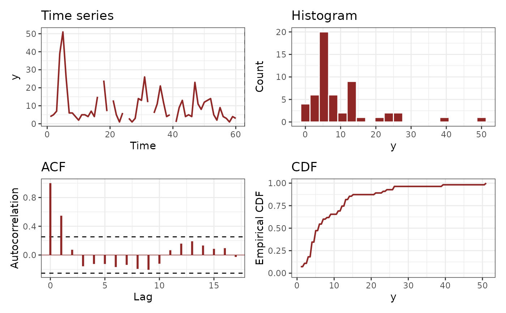
# Plot all series together
plot_mvgam_series(data = dat$data_train, series = "all")
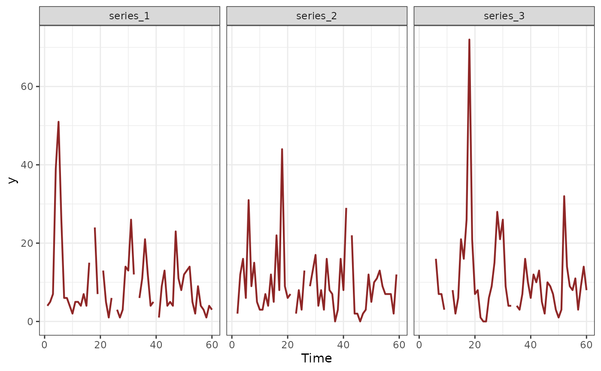
# Formulate a model using Stan where series share a cyclic smooth for
# seasonality and each series has an independent AR1 temporal process.
# Note that 'noncentred = TRUE' will likely give performance gains.
# Set run_model = FALSE to inspect the returned objects
mod1 <- mvgam(
formula = y ~ s(season, bs = "cc", k = 6),
data = dat$data_train,
trend_model = AR(),
family = poisson(),
noncentred = TRUE,
run_model = FALSE
)
# View the model code in Stan language
stancode(mod1)
#> // Stan model code generated by package mvgam
#> data {
#> int<lower=0> total_obs; // total number of observations
#> int<lower=0> n; // number of timepoints per series
#> int<lower=0> n_sp; // number of smoothing parameters
#> int<lower=0> n_series; // number of series
#> int<lower=0> num_basis; // total number of basis coefficients
#> vector[num_basis] zero; // prior locations for basis coefficients
#> matrix[total_obs, num_basis] X; // mgcv GAM design matrix
#> array[n, n_series] int<lower=0> ytimes; // time-ordered matrix (which col in X belongs to each [time, series] observation?)
#> matrix[4, 4] S1; // mgcv smooth penalty matrix S1
#> int<lower=0> n_nonmissing; // number of nonmissing observations
#> array[n_nonmissing] int<lower=0> flat_ys; // flattened nonmissing observations
#> matrix[n_nonmissing, num_basis] flat_xs; // X values for nonmissing observations
#> array[n_nonmissing] int<lower=0> obs_ind; // indices of nonmissing observations
#> }
#> parameters {
#> // raw basis coefficients
#> vector[num_basis] b_raw;
#>
#> // latent trend AR1 terms
#> vector<lower=-1, upper=1>[n_series] ar1;
#>
#> // latent trend variance parameters
#> vector<lower=0>[n_series] sigma;
#>
#> // raw latent trends
#> matrix[n, n_series] trend_raw;
#>
#> // smoothing parameters
#> vector<lower=0>[n_sp] lambda;
#> }
#> transformed parameters {
#> // basis coefficients
#> vector[num_basis] b;
#>
#> // latent trends
#> matrix[n, n_series] trend;
#> trend = trend_raw .* rep_matrix(sigma', rows(trend_raw));
#> for (s in 1 : n_series) {
#> trend[2 : n, s] += ar1[s] * trend[1 : (n - 1), s];
#> }
#> b[1 : num_basis] = b_raw[1 : num_basis];
#> }
#> model {
#> // prior for (Intercept)...
#> b_raw[1] ~ student_t(3, 1.9, 2.5);
#>
#> // prior for s(season)...
#> b_raw[2 : 5] ~ multi_normal_prec(zero[2 : 5], S1[1 : 4, 1 : 4] * lambda[1]);
#>
#> // priors for AR parameters
#> ar1 ~ std_normal();
#>
#> // priors for smoothing parameters
#> lambda ~ normal(5, 30);
#>
#> // priors for latent trend variance parameters
#> sigma ~ inv_gamma(1.418, 0.452);
#> to_vector(trend_raw) ~ std_normal();
#> {
#> // likelihood functions
#> vector[n_nonmissing] flat_trends;
#> flat_trends = to_vector(trend)[obs_ind];
#> flat_ys ~ poisson_log_glm(append_col(flat_xs, flat_trends), 0.0,
#> append_row(b, 1.0));
#> }
#> }
#> generated quantities {
#> vector[total_obs] eta;
#> matrix[n, n_series] mus;
#> vector[n_sp] rho;
#> vector[n_series] tau;
#> array[n, n_series] int ypred;
#> rho = log(lambda);
#> for (s in 1 : n_series) {
#> tau[s] = pow(sigma[s], -2.0);
#> }
#>
#> // posterior predictions
#> eta = X * b;
#> for (s in 1 : n_series) {
#> mus[1 : n, s] = eta[ytimes[1 : n, s]] + trend[1 : n, s];
#> ypred[1 : n, s] = poisson_log_rng(mus[1 : n, s]);
#> }
#> }
#>
#>
# View the data objects needed to fit the model in Stan
sdata1 <- standata(mod1)
str(sdata1)
#> List of 18
#> $ y : num [1:60, 1:3] 4 5 7 39 51 26 6 6 4 2 ...
#> $ n : int 60
#> $ X : num [1:180, 1:5] 1 1 1 1 1 1 1 1 1 1 ...
#> ..- attr(*, "dimnames")=List of 2
#> .. ..$ : NULL
#> .. ..$ : chr [1:5] "X.Intercept." "V2" "V3" "V4" ...
#> $ S1 : num [1:4, 1:4] 1.244 -0.397 0.384 0.619 -0.397 ...
#> $ zero : num [1:5] 0 0 0 0 0
#> $ p_coefs : Named num 0
#> ..- attr(*, "names")= chr "(Intercept)"
#> $ p_taus : num 0.853
#> $ ytimes : int [1:60, 1:3] 1 4 7 10 13 16 19 22 25 28 ...
#> $ n_series : int 3
#> $ sp : Named num 0.368
#> ..- attr(*, "names")= chr "s(season)"
#> $ y_observed : num [1:60, 1:3] 1 1 1 1 1 1 1 1 1 1 ...
#> $ total_obs : int 180
#> $ num_basis : int 5
#> $ n_sp : num 1
#> $ n_nonmissing: int 164
#> $ obs_ind : int [1:164] 1 2 3 4 5 6 7 8 9 10 ...
#> $ flat_ys : num [1:164] 4 5 7 39 51 26 6 6 4 2 ...
#> $ flat_xs : num [1:164, 1:5] 1 1 1 1 1 1 1 1 1 1 ...
#> ..- attr(*, "dimnames")=List of 2
#> .. ..$ : NULL
#> .. ..$ : chr [1:5] "X.Intercept." "V2" "V3" "V4" ...
#> - attr(*, "trend_model")= chr "AR1"
# Now fit the model
mod1 <- mvgam(
formula = y ~ s(season, bs = "cc", k = 6),
data = dat$data_train,
trend_model = AR(),
family = poisson(),
noncentred = TRUE,
chains = 2,
silent = 2
)
# Extract the model summary
summary(mod1)
#> GAM formula:
#> y ~ s(season, bs = "cc", k = 6)
#> <environment: 0x5630ee8c5dd8>
#>
#> Family:
#> poisson
#>
#> Link function:
#> log
#>
#> Trend model:
#> AR()
#>
#>
#> N series:
#> 3
#>
#> N timepoints:
#> 60
#>
#> Status:
#> Fitted using Stan
#> 2 chains, each with iter = 1000; warmup = 500; thin = 1
#> Total post-warmup draws = 1000
#>
#>
#> GAM coefficient (beta) estimates:
#> 2.5% 50% 97.5% Rhat n_eff
#> (Intercept) 1.900 2.00 2.10 1.00 582
#> s(season).1 0.079 0.31 0.52 1.00 457
#> s(season).2 0.590 0.82 1.10 1.01 293
#> s(season).3 -0.051 0.17 0.41 1.00 407
#> s(season).4 -0.650 -0.42 -0.22 1.01 594
#>
#> Approximate significance of GAM smooths:
#> edf Ref.df Chi.sq p-value
#> s(season) 3.31 4 42.3 8.3e-07 ***
#> ---
#> Signif. codes: 0 ‘***’ 0.001 ‘**’ 0.01 ‘*’ 0.05 ‘.’ 0.1 ‘ ’ 1
#>
#> Latent trend parameter AR estimates:
#> 2.5% 50% 97.5% Rhat n_eff
#> ar1[1] 0.28 0.74 0.9800 1.00 231
#> ar1[2] -0.95 -0.48 -0.0039 1.01 143
#> ar1[3] 0.19 0.72 0.9800 1.00 174
#> sigma[1] 0.41 0.55 0.7600 1.01 364
#> sigma[2] 0.32 0.47 0.6600 1.01 274
#> sigma[3] 0.36 0.49 0.6800 1.00 339
#>
#> Stan MCMC diagnostics:
#> ✔ No issues with effective samples per iteration
#> ✔ Rhat looks good for all parameters
#> ✔ No issues with divergences
#> ✔ No issues with maximum tree depth
#>
#> Samples were drawn using sampling(hmc). For each parameter, n_eff is a
#> crude measure of effective sample size, and Rhat is the potential scale
#> reduction factor on split MCMC chains (at convergence, Rhat = 1)
#>
#> Use how_to_cite() to get started describing this model
# Plot the estimated historical trend and forecast for one series
plot(mod1, type = "trend", series = 1)
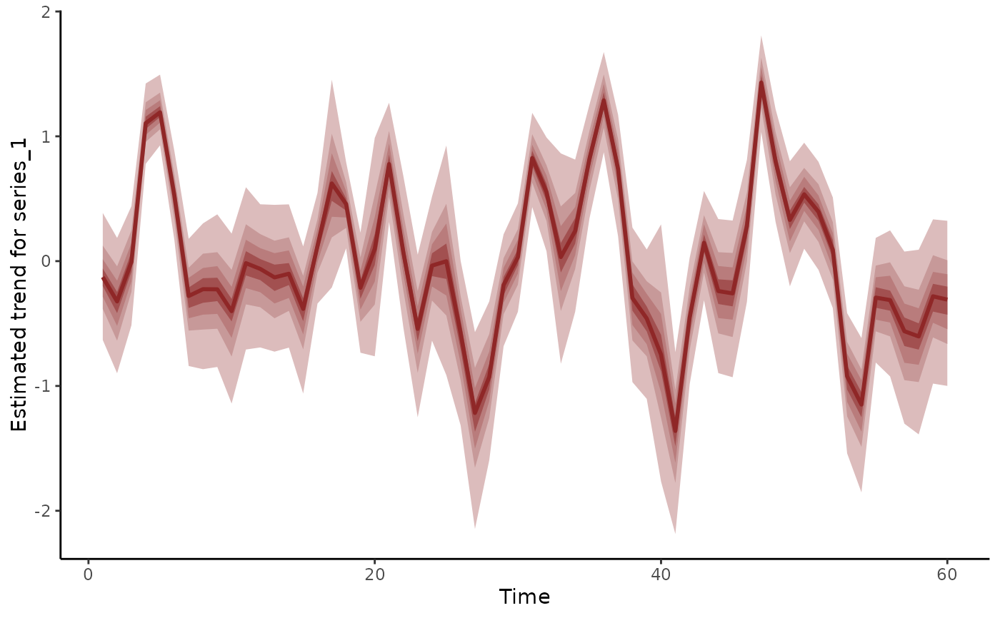
plot(mod1, type = "forecast", series = 1)
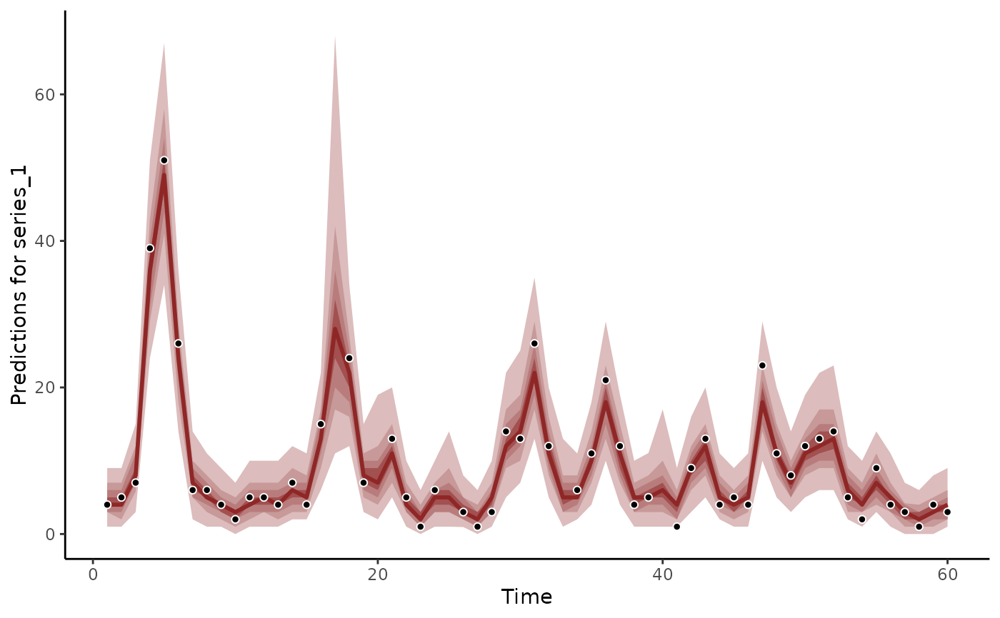
# Residual diagnostics
plot(mod1, type = "residuals", series = 1)
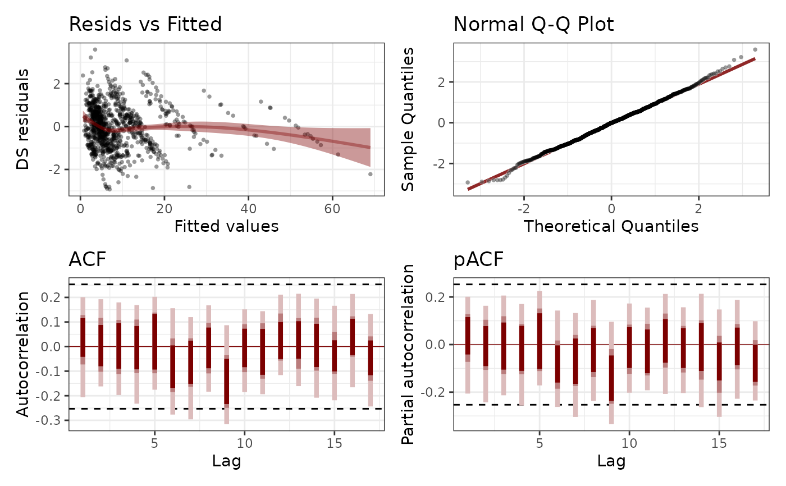
resids <- residuals(mod1)
str(resids)
#> num [1:180, 1:4] -0.158 NaN -0.154 0.277 -0.848 ...
#> - attr(*, "dimnames")=List of 2
#> ..$ : NULL
#> ..$ : chr [1:4] "Estimate" "Est.Error" "Q2.5" "Q97.5"
# Fitted values and residuals can also be added to training data
augment(mod1)
#> # A tibble: 180 × 14
#> y season year series time .observed .fitted .fit.variability
#> <int> <int> <int> <fct> <int> <int> <dbl> <dbl>
#> 1 4 1 1 series_1 1 4 4.68 1.57
#> 2 NA 1 1 series_2 1 NA 7.06 4.03
#> 3 4 1 1 series_3 1 4 4.63 1.52
#> 4 5 2 1 series_1 2 5 4.73 1.62
#> 5 2 2 1 series_2 2 2 3.84 1.38
#> 6 NA 2 1 series_3 2 NA 5.22 3.01
#> 7 7 3 1 series_1 3 7 8.50 2.51
#> 8 12 3 1 series_2 3 12 11.5 2.67
#> 9 4 3 1 series_3 3 4 5.46 1.94
#> 10 39 4 1 series_1 4 39 36.1 5.62
#> # ℹ 170 more rows
#> # ℹ 6 more variables: .fit.cred.low <dbl>, .fit.cred.high <dbl>, .resid <dbl>,
#> # .resid.variability <dbl>, .resid.cred.low <dbl>, .resid.cred.high <dbl>
# Compute the forecast using covariate information in data_test
fc <- forecast(mod1, newdata = dat$data_test)
str(fc)
#> List of 16
#> $ call :Class 'formula' language y ~ s(season, bs = "cc", k = 6)
#> .. ..- attr(*, ".Environment")=<environment: 0x5630ee8c5dd8>
#> $ trend_call : NULL
#> $ family : chr "poisson"
#> $ family_pars : NULL
#> $ trend_model :List of 7
#> ..$ trend_model: chr "AR1"
#> ..$ ma : logi FALSE
#> ..$ cor : logi FALSE
#> ..$ unit : chr "time"
#> ..$ gr : chr "NA"
#> ..$ subgr : chr "series"
#> ..$ label : language AR()
#> ..- attr(*, "class")= chr "mvgam_trend"
#> $ drift : logi FALSE
#> $ use_lv : logi FALSE
#> $ fit_engine : chr "stan"
#> $ type : chr "response"
#> $ series_names : Factor w/ 3 levels "series_1","series_2",..: 1 2 3
#> $ train_observations:List of 3
#> ..$ series_1: int [1:60] 4 5 7 39 51 26 6 6 4 2 ...
#> ..$ series_2: int [1:60] NA 2 12 16 6 31 9 15 5 3 ...
#> ..$ series_3: int [1:60] 4 NA 4 NA NA 16 7 7 3 NA ...
#> $ train_times :List of 3
#> ..$ series_1: int [1:60] 1 2 3 4 5 6 7 8 9 10 ...
#> ..$ series_2: int [1:60] 1 2 3 4 5 6 7 8 9 10 ...
#> ..$ series_3: int [1:60] 1 2 3 4 5 6 7 8 9 10 ...
#> $ test_observations :List of 3
#> ..$ series_1: int [1:20] 1 NA NA 13 18 20 16 6 NA 4 ...
#> ..$ series_2: int [1:20] 4 36 8 6 7 NA NA 1 6 4 ...
#> ..$ series_3: int [1:20] 6 8 5 5 19 14 1 1 7 0 ...
#> $ test_times :List of 3
#> ..$ series_1: int [1:20] 61 62 63 64 65 66 67 68 69 70 ...
#> ..$ series_2: int [1:20] 61 62 63 64 65 66 67 68 69 70 ...
#> ..$ series_3: int [1:20] 61 62 63 64 65 66 67 68 69 70 ...
#> $ hindcasts :List of 3
#> ..$ series_1: num [1:1000, 1:60] 8 3 1 5 7 1 8 3 5 2 ...
#> .. ..- attr(*, "dimnames")=List of 2
#> .. .. ..$ : NULL
#> .. .. ..$ : chr [1:60] "ypred[1,1]" "ypred[2,1]" "ypred[3,1]" "ypred[4,1]" ...
#> ..$ series_2: num [1:1000, 1:60] 9 4 6 12 8 4 4 6 4 8 ...
#> .. ..- attr(*, "dimnames")=List of 2
#> .. .. ..$ : NULL
#> .. .. ..$ : chr [1:60] "ypred[1,2]" "ypred[2,2]" "ypred[3,2]" "ypred[4,2]" ...
#> ..$ series_3: num [1:1000, 1:60] 2 3 7 5 5 3 6 1 12 0 ...
#> .. ..- attr(*, "dimnames")=List of 2
#> .. .. ..$ : NULL
#> .. .. ..$ : chr [1:60] "ypred[1,3]" "ypred[2,3]" "ypred[3,3]" "ypred[4,3]" ...
#> $ forecasts :List of 3
#> ..$ series_1: int [1:1000, 1:20] 2 3 1 0 3 2 0 12 2 10 ...
#> ..$ series_2: int [1:1000, 1:20] 2 13 3 13 8 1 11 4 7 6 ...
#> ..$ series_3: int [1:1000, 1:20] 15 1 12 3 6 7 7 5 33 10 ...
#> - attr(*, "class")= chr "mvgam_forecast"
fc_summary <- summary(fc)
head(fc_summary, 12)
#> # A tibble: 12 × 7
#> series time predQ50 predQ2.5 predQ97.5 truth type
#> <fct> <int> <dbl> <dbl> <dbl> <int> <chr>
#> 1 series_1 1 4.5 1 11 4 response
#> 2 series_1 2 4 1 11 5 response
#> 3 series_1 3 8 3 17 7 response
#> 4 series_1 4 36 22 53 39 response
#> 5 series_1 5 50 31 71.0 51 response
#> 6 series_1 6 24 13 39 26 response
#> 7 series_1 7 7 2 16 6 response
#> 8 series_1 8 5 1 13 6 response
#> 9 series_1 9 4 1 10 4 response
#> 10 series_1 10 3 0 8 2 response
#> 11 series_1 11 4 0 11 5 response
#> 12 series_1 12 5 1 12 5 response
plot(fc)
#> Out of sample DRPS:
#> 57.427275
#> Warning: Removed 8 rows containing missing values or values outside the scale range
#> (`geom_point()`).
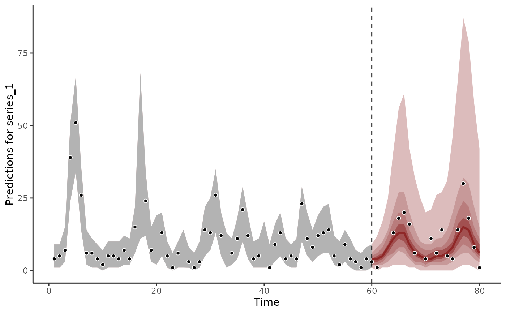
# Plot the estimated seasonal smooth function
plot(mod1, type = "smooths")
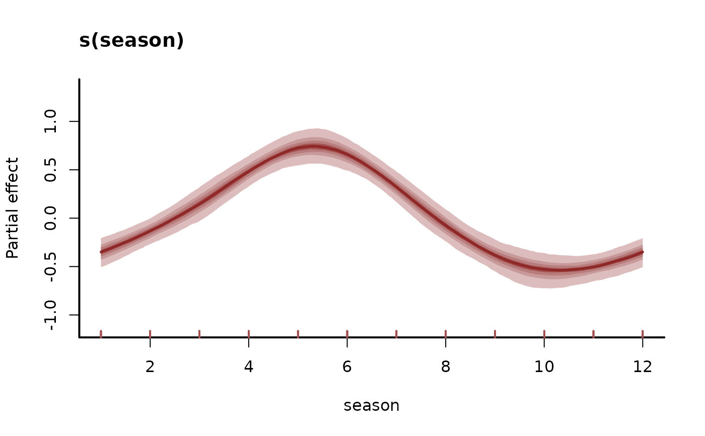
# Plot estimated first derivatives of the smooth
plot(mod1, type = "smooths", derivatives = TRUE)
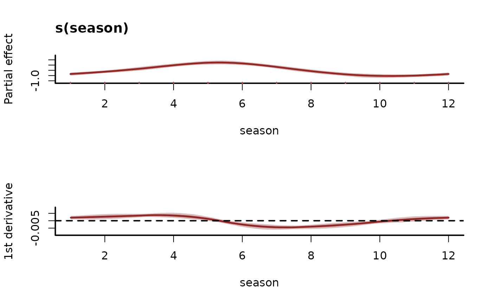
# Plot partial residuals of the smooth
plot(mod1, type = "smooths", residuals = TRUE)
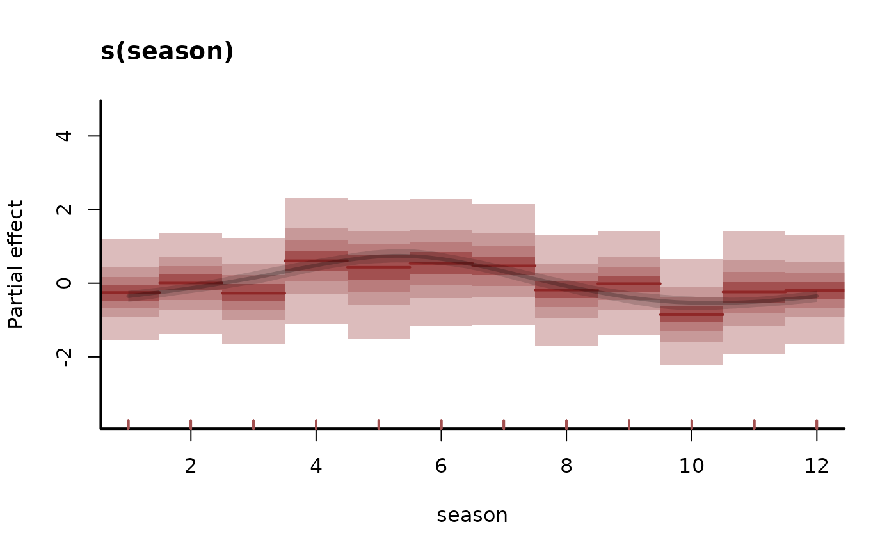
# Plot posterior realisations for the smooth
plot(mod1, type = "smooths", realisations = TRUE)
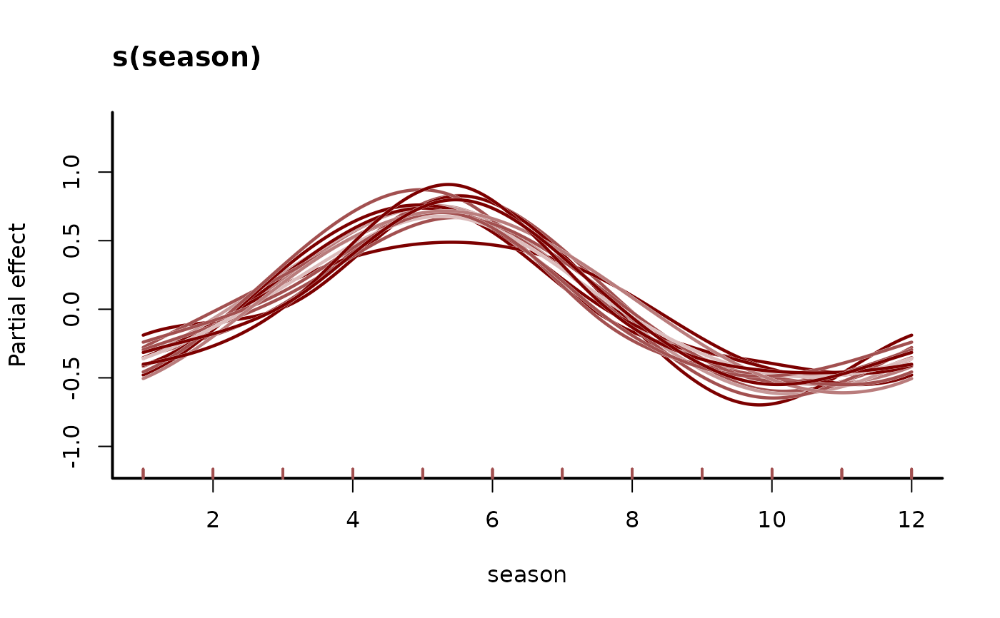
# Plot conditional response predictions using marginaleffects
conditional_effects(mod1)
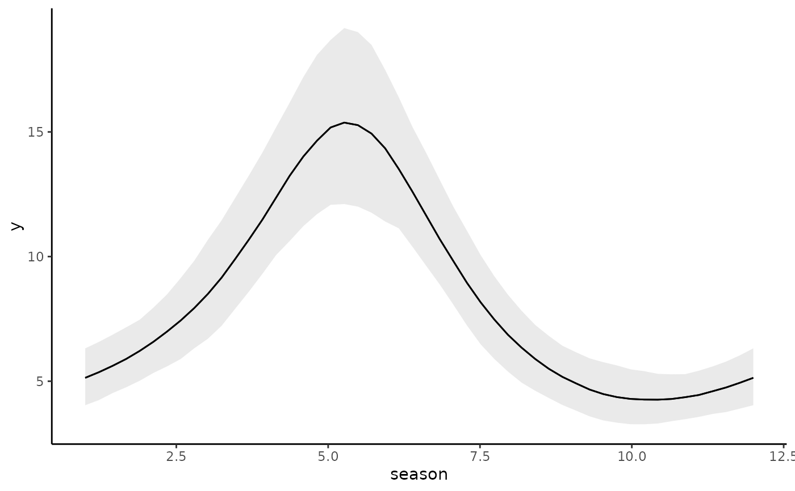
plot_predictions(mod1, condition = "season", points = 0.5)
#> Warning: Removed 16 rows containing missing values or values outside the scale range
#> (`geom_point()`).
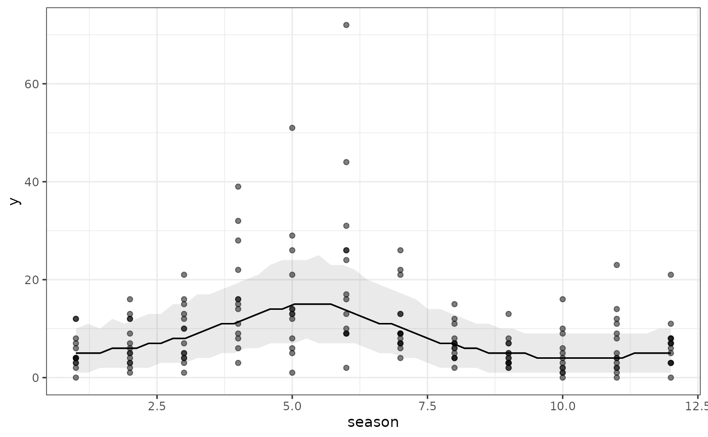
# Generate posterior predictive checks using bayesplot
pp_check(mod1)
#> Using 10 posterior draws for ppc type 'dens_overlay' by default.
#> Warning: NA responses are not shown in 'pp_check'.
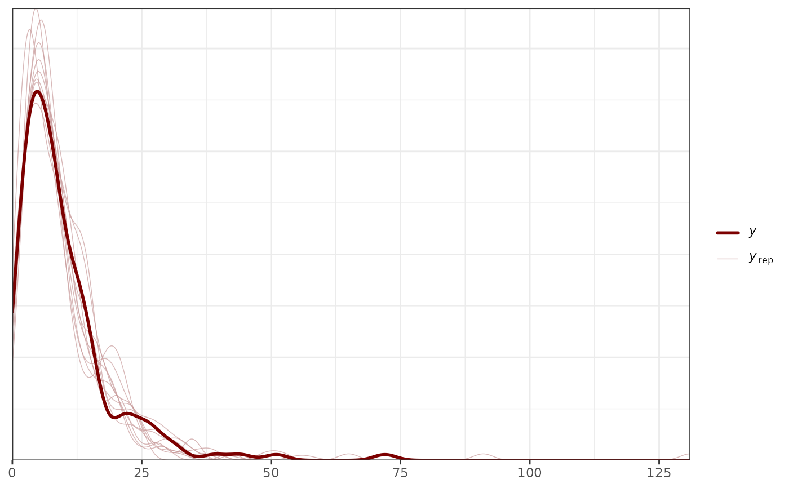
# Extract observation model beta coefficient draws as a data.frame
beta_draws_df <- as.data.frame(mod1, variable = "betas")
head(beta_draws_df)
#> (Intercept) s(season).1 s(season).2 s(season).3 s(season).4
#> 1 2.02377 0.339960 0.807651 0.2134910 -0.384225
#> 2 1.90911 0.426211 0.999631 0.1254090 -0.570203
#> 3 1.99496 0.464323 0.766504 0.3942860 -0.506176
#> 4 1.93253 0.429288 0.705769 0.1273360 -0.307990
#> 5 1.97859 0.154809 0.964565 0.0666232 -0.493254
#> 6 1.95921 0.385504 0.686465 0.1625780 -0.223091
str(beta_draws_df)
#> 'data.frame': 1000 obs. of 5 variables:
#> $ (Intercept): num 2.02 1.91 1.99 1.93 1.98 ...
#> $ s(season).1: num 0.34 0.426 0.464 0.429 0.155 ...
#> $ s(season).2: num 0.808 1 0.767 0.706 0.965 ...
#> $ s(season).3: num 0.2135 0.1254 0.3943 0.1273 0.0666 ...
#> $ s(season).4: num -0.384 -0.57 -0.506 -0.308 -0.493 ...
# Investigate model fit
mc.cores.def <- getOption("mc.cores")
options(mc.cores = 1)
loo(mod1)
#> Warning: Some Pareto k diagnostic values are too high. See help('pareto-k-diagnostic') for details.
#>
#> Computed from 1000 by 164 log-likelihood matrix.
#>
#> Estimate SE
#> elpd_loo -812.9 97.8
#> p_loo 128.3 34.8
#> looic 1625.8 195.7
#> ------
#> MCSE of elpd_loo is NA.
#> MCSE and ESS estimates assume MCMC draws (r_eff in [0.3, 1.0]).
#>
#> Pareto k diagnostic values:
#> Count Pct. Min. ESS
#> (-Inf, 0.67] (good) 150 91.5% 46
#> (0.67, 1] (bad) 10 6.1% <NA>
#> (1, Inf) (very bad) 4 2.4% <NA>
#> See help('pareto-k-diagnostic') for details.
options(mc.cores = mc.cores.def)
# Fit a model to the portal time series that uses a latent
# Vector Autoregression of order 1
mod <- mvgam(
formula = captures ~ -1,
trend_formula = ~ trend,
trend_model = VAR(cor = TRUE),
family = poisson(),
data = portal_data,
chains = 2,
silent = 2
)
# Plot the autoregressive coefficient distributions;
# use 'dir = "v"' to arrange the order of facets
# correctly
mcmc_plot(
mod,
variable = 'A',
regex = TRUE,
type = 'hist',
facet_args = list(dir = 'v')
)
#> `stat_bin()` using `bins = 30`. Pick better value with `binwidth`.
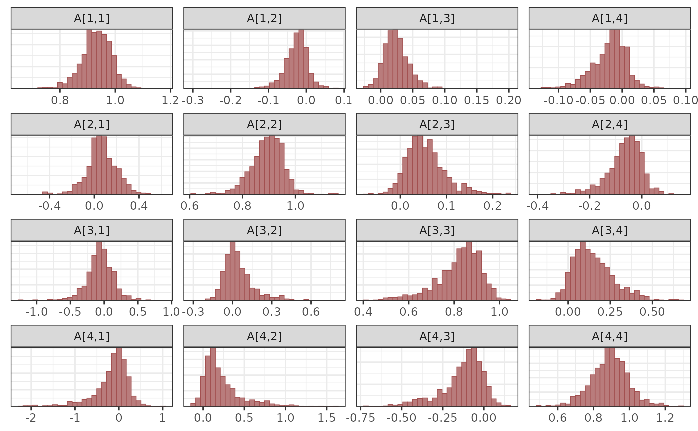
# Plot the process error variance-covariance matrix in the same way;
mcmc_plot(
mod,
variable = 'Sigma',
regex = TRUE,
type = 'hist',
facet_args = list(dir = 'v')
)
#> `stat_bin()` using `bins = 30`. Pick better value with `binwidth`.
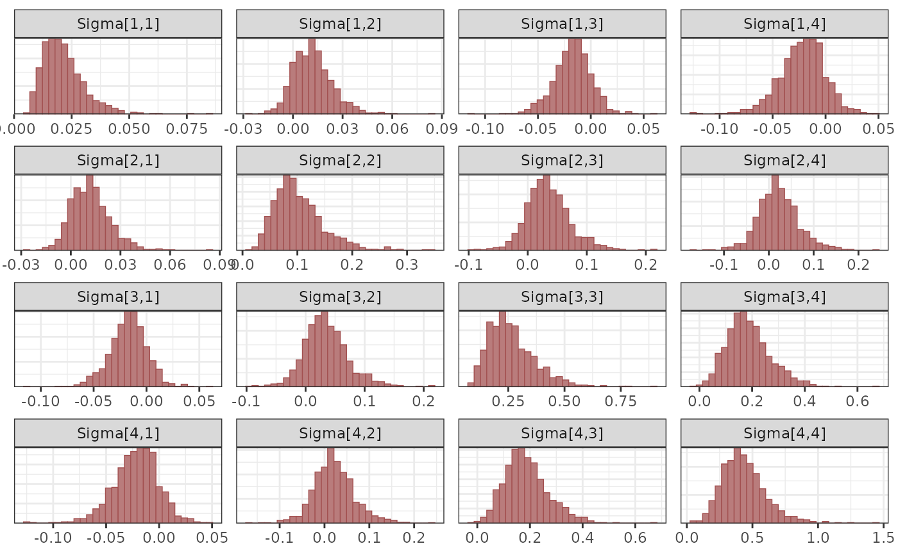
# Calulate Generalized IRFs for each series
irfs <- irf(
mod,
h = 12,
cumulative = FALSE
)
# Plot some of them
plot(irfs, series = 1)
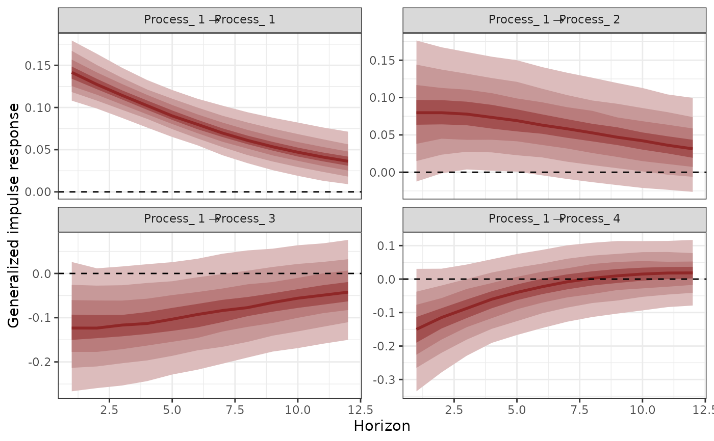
plot(irfs, series = 2)
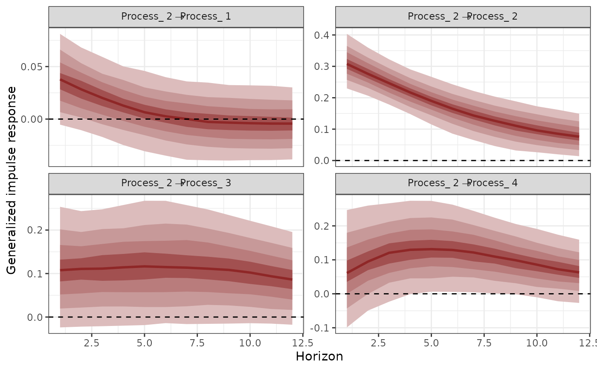
# Calulate forecast error variance decompositions for each series
fevds <- fevd(mod, h = 12)
# Plot median contributions to forecast error variance
plot(fevds)
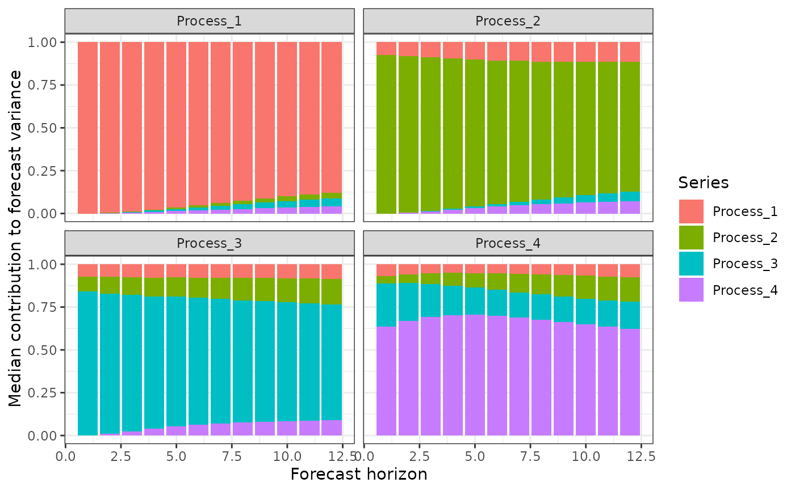
# Now fit a model that uses two RW dynamic factors to model
# the temporal dynamics of the four rodent species
mod <- mvgam(
captures ~ series,
trend_model = RW(),
use_lv = TRUE,
n_lv = 2,
data = portal_data,
chains = 2,
silent = 2
)
#> Warning in '/tmp/RtmpNZUIVa/model_fe1a9373f4bc428a5906ce7b23b30b3c.stan', line 20, column 31: Found
#> int division:
#> n_lv * (n_lv - 1) / 2
#> Values will be rounded towards zero. If rounding is not desired you can
#> write
#> the division as
#> n_lv * (n_lv - 1) / 2.0
#> If rounding is intended please use the integer division operator %/%.
#> Warning in '/tmp/RtmpNZUIVa/model-24944ca93a4a.stan', line 20, column 33: Found
#> int division:
#> n_lv * (n_lv - 1) / 2
#> Values will be rounded towards zero. If rounding is not desired you can
#> write
#> the division as
#> n_lv * (n_lv - 1) / 2.0
#> If rounding is intended please use the integer division operator %/%.
# Plot the factors
plot(mod, type = 'factors')
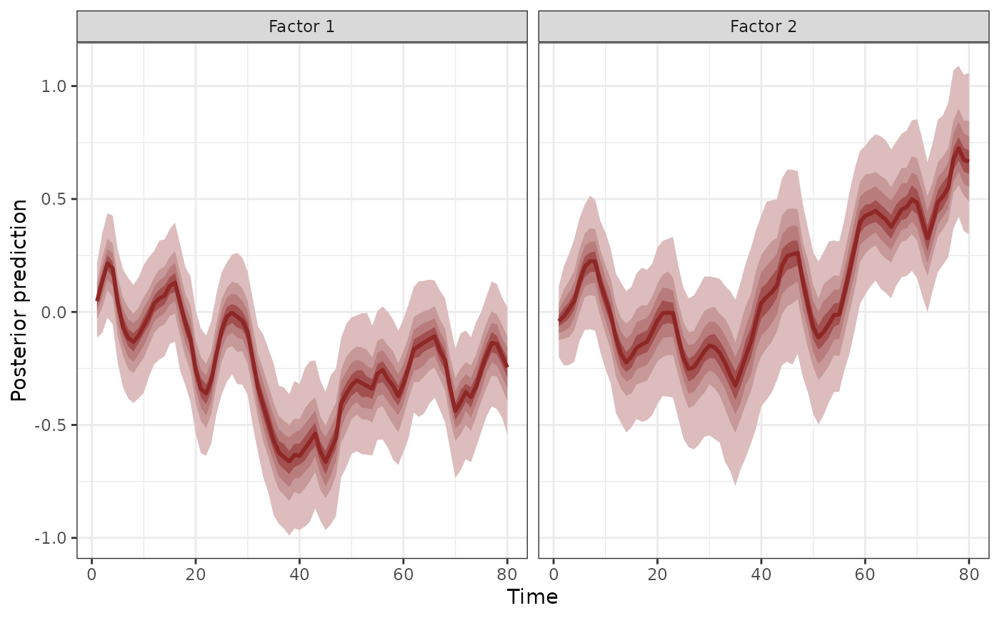
#> # A tibble: 2 × 2
#> Factor Contribution
#> <chr> <dbl>
#> 1 Factor 1 0.532
#> 2 Factor 2 0.468
# Plot the hindcasts
hcs <- hindcast(mod)
plot(hcs,
series = 1)
#> No non-missing values in test_observations; cannot calculate forecast score
#> Warning: Removed 17 rows containing missing values or values outside the scale range
#> (`geom_point()`).
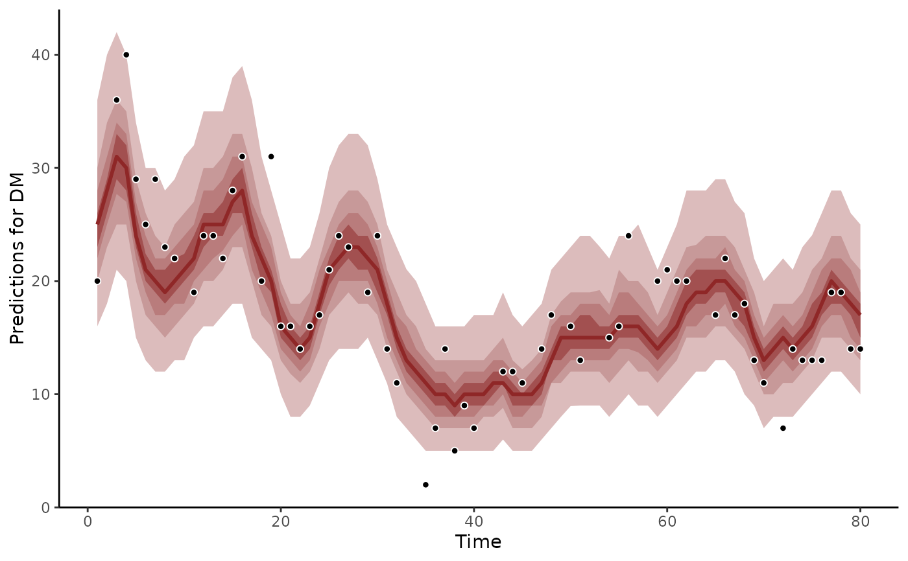
plot(hcs,
series = 2)
#> No non-missing values in test_observations; cannot calculate forecast score
#> Warning: Removed 17 rows containing missing values or values outside the scale range
#> (`geom_point()`).
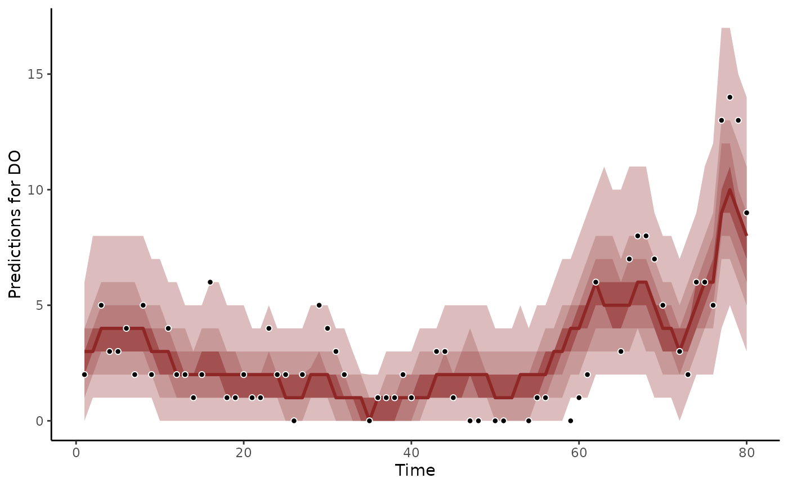
plot(hcs,
series = 3)
#> No non-missing values in test_observations; cannot calculate forecast score
#> Warning: Removed 17 rows containing missing values or values outside the scale range
#> (`geom_point()`).
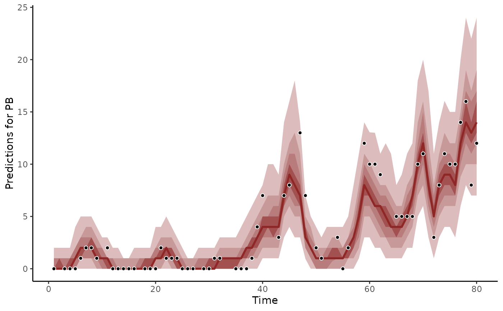
plot(hcs,
series = 4)
#> No non-missing values in test_observations; cannot calculate forecast score
#> Warning: Removed 17 rows containing missing values or values outside the scale range
#> (`geom_point()`).
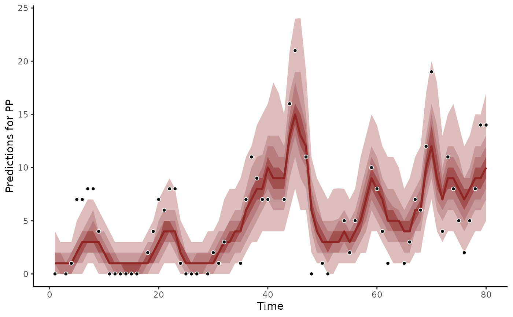
# Use residual_cor() to calculate temporal correlations among the series
# based on the factor loadings
lvcors <- residual_cor(mod)
names(lvcors)
#> [1] "cor" "cor_lower" "cor_upper" "sig_cor" "cov"
#> [6] "prec" "prec_lower" "prec_upper" "sig_prec" "trace"
lvcors$cor
#> DM DO PB PP
#> DM 1.0000000 0.5156657 -0.5619562 -0.8214555
#> DO 0.5156657 1.0000000 0.3661782 0.0105830
#> PB -0.5619562 0.3661782 1.0000000 0.9171802
#> PP -0.8214555 0.0105830 0.9171802 1.0000000
# For those correlations whose credible intervals did not include
# zero, plot them as a correlation matrix (all other correlations
# are shown as zero on this plot)
plot(lvcors, cluster = TRUE)
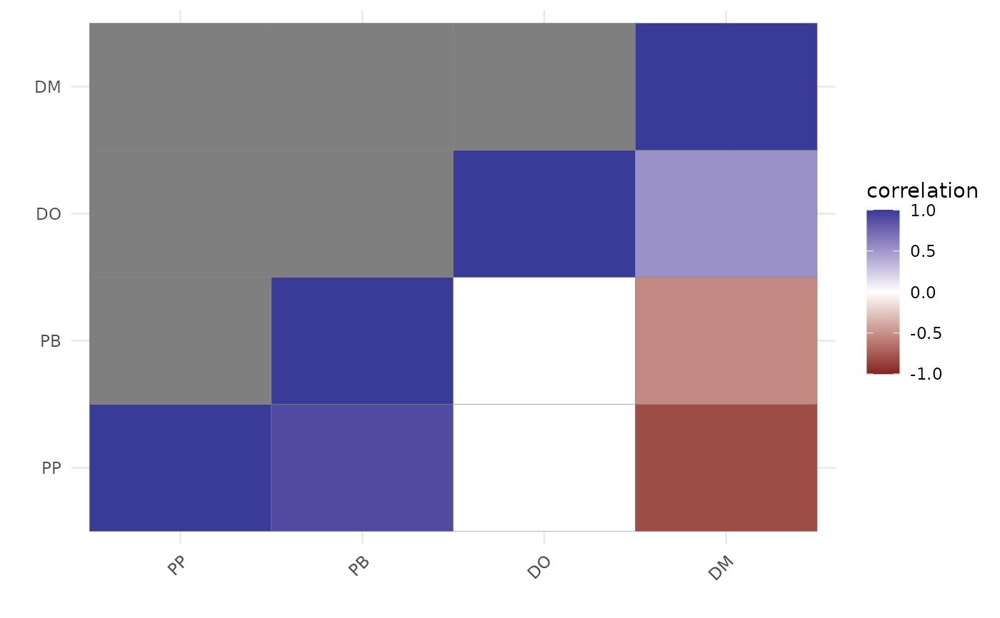
# Example of supplying a trend_map so that some series can share
# latent trend processes
sim <- sim_mvgam(n_series = 3)
mod_data <- sim$data_train
# Here, we specify only two latent trends; series 1 and 2 share a trend,
# while series 3 has it's own unique latent trend
trend_map <- data.frame(
series = unique(mod_data$series),
trend = c(1, 1, 2)
)
# Fit the model using AR1 trends
mod <- mvgam(
formula = y ~ s(season, bs = "cc", k = 6),
trend_map = trend_map,
trend_model = AR(),
data = mod_data,
return_model_data = TRUE,
chains = 2,
silent = 2
)
# The mapping matrix is now supplied as data to the model in the 'Z' element
mod$model_data$Z
#> [,1] [,2]
#> [1,] 1 0
#> [2,] 1 0
#> [3,] 0 1
# The first two series share an identical latent trend; the third is different
plot(residual_cor(mod))
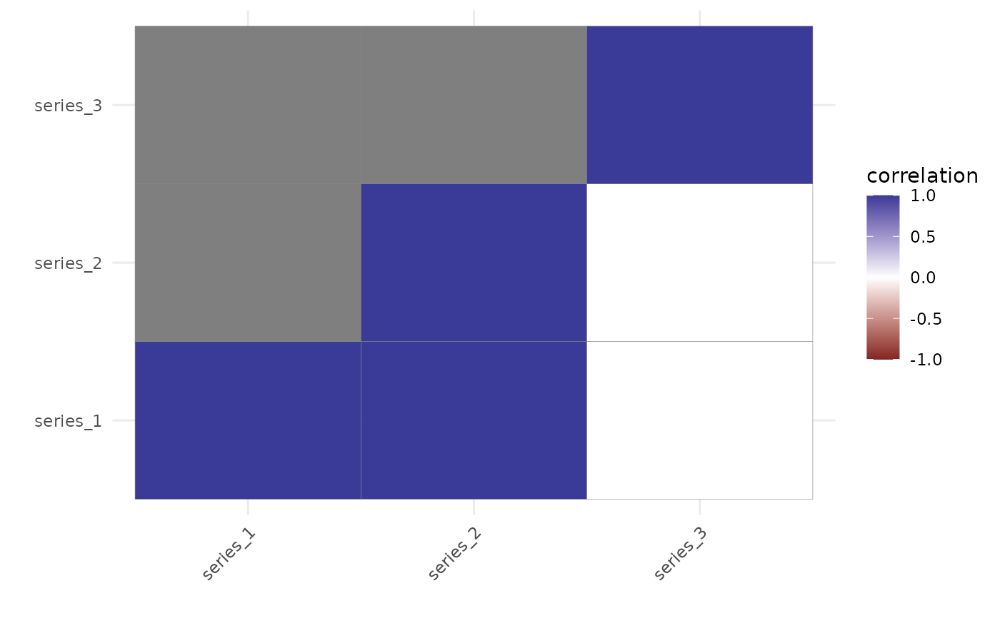
plot(mod, type = "trend", series = 1)
plot(mod, type = "trend", series = 2)
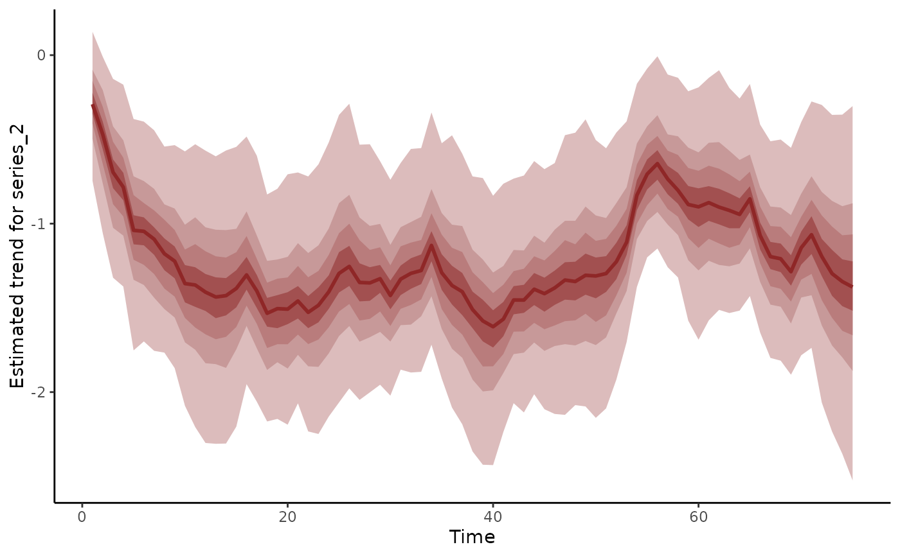
plot(mod, type = "trend", series = 3)
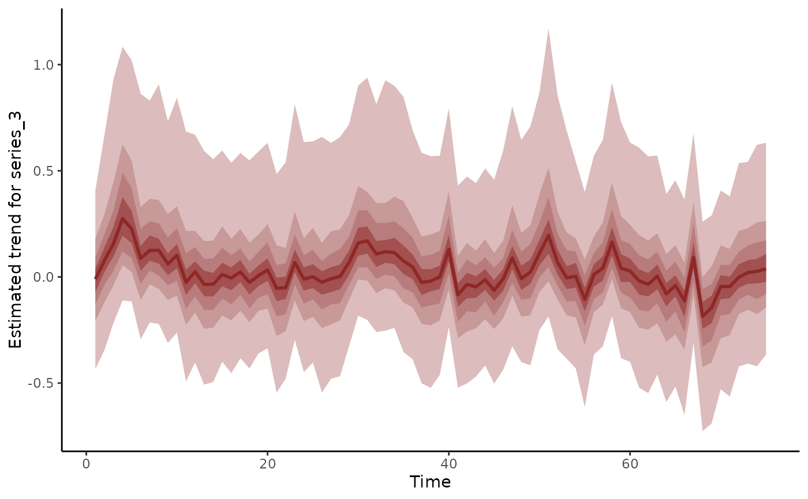
# Example of how to use dynamic coefficients
# Simulate a time-varying coefficient for the effect of temperature
set.seed(123)
N <- 200
beta_temp <- vector(length = N)
beta_temp[1] <- 0.4
for (i in 2:N) {
beta_temp[i] <- rnorm(1, mean = beta_temp[i - 1] - 0.0025, sd = 0.05)
}
plot(beta_temp)
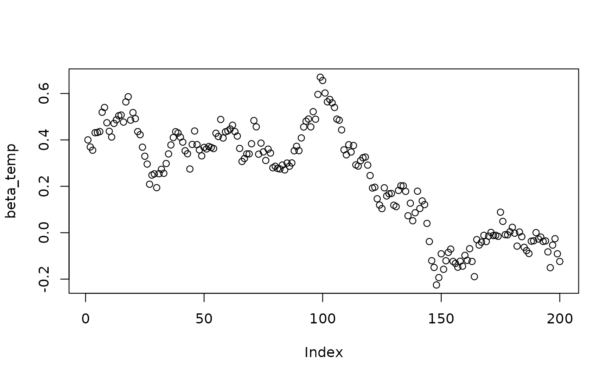
# Simulate a covariate called 'temp'
temp <- rnorm(N, sd = 1)
# Simulate some noisy Gaussian observations
out <- rnorm(N,
mean = 4 + beta_temp * temp,
sd = 0.5
)
# Gather necessary data into a data.frame; split into training / testing
data <- data.frame(out, temp, time = seq_along(temp))
data_train <- data[1:180, ]
data_test <- data[181:200, ]
# Fit the model using the dynamic() function
mod <- mvgam(
formula =
out ~ dynamic(
temp,
scale = FALSE,
k = 40
),
family = gaussian(),
data = data_train,
newdata = data_test,
chains = 2,
silent = 2
)
# Inspect the model summary, forecast and time-varying coefficient distribution
summary(mod)
#> GAM formula:
#> out ~ gp(time, by = temp, c = 5/4, k = 40, scale = FALSE)
#> <environment: 0x5630ee8c5dd8>
#>
#> Family:
#> gaussian
#>
#> Link function:
#> identity
#>
#> Trend model:
#> None
#>
#> N series:
#> 1
#>
#> N timepoints:
#> 200
#>
#> Status:
#> Fitted using Stan
#> 2 chains, each with iter = 1000; warmup = 500; thin = 1
#> Total post-warmup draws = 1000
#>
#>
#> Observation error parameter estimates:
#> 2.5% 50% 97.5% Rhat n_eff
#> sigma_obs[1] 0.44 0.49 0.54 1 895
#>
#> GAM coefficient (beta) estimates:
#> 2.5% 50% 97.5% Rhat n_eff
#> (Intercept) 4.000 4.0e+00 4.100 1.00 1037
#> gp(time):temp.1 0.920 3.3e+00 6.200 1.00 803
#> gp(time):temp.2 -3.600 1.4e+00 5.400 1.00 464
#> gp(time):temp.3 -5.500 -1.5e+00 3.600 1.00 451
#> gp(time):temp.4 -5.900 -1.2e+00 2.300 1.00 537
#> gp(time):temp.5 -3.000 4.9e-01 3.700 1.01 262
#> gp(time):temp.6 -2.400 2.4e-01 3.600 1.00 866
#> gp(time):temp.7 -3.600 -4.0e-01 1.900 1.01 421
#> gp(time):temp.8 -1.700 2.7e-01 2.700 1.00 937
#> gp(time):temp.9 -1.300 3.7e-01 2.400 1.00 841
#> gp(time):temp.10 -2.400 -3.8e-01 1.000 1.00 720
#> gp(time):temp.11 -2.000 -3.7e-02 1.400 1.00 943
#> gp(time):temp.12 -0.740 1.7e-01 2.100 1.00 1059
#> gp(time):temp.13 -1.400 -9.4e-13 1.300 1.00 1147
#> gp(time):temp.14 -1.600 -6.4e-03 0.780 1.00 970
#> gp(time):temp.15 -0.980 -3.1e-18 1.100 1.00 1218
#> gp(time):temp.16 -0.640 3.0e-06 1.100 1.00 1390
#> gp(time):temp.17 -0.660 7.0e-11 0.960 1.00 1029
#> gp(time):temp.18 -0.670 -3.2e-26 0.710 1.00 1423
#> gp(time):temp.19 -0.830 -1.9e-05 0.310 1.00 890
#> gp(time):temp.20 -0.630 3.3e-26 0.500 1.00 1502
#> gp(time):temp.21 -0.330 7.3e-09 0.860 1.01 526
#> gp(time):temp.22 -0.640 -2.8e-19 0.310 1.00 909
#> gp(time):temp.23 -0.580 -4.8e-13 0.290 1.00 1044
#> gp(time):temp.24 -0.180 2.0e-10 0.550 1.00 794
#> gp(time):temp.25 -0.300 -4.9e-32 0.290 1.00 1154
#> gp(time):temp.26 -0.390 -9.6e-15 0.140 1.00 903
#> gp(time):temp.27 -0.190 1.6e-55 0.340 1.00 1268
#> gp(time):temp.28 -0.100 2.1e-33 0.380 1.00 976
#> gp(time):temp.29 -0.250 -3.6e-40 0.150 1.00 934
#> gp(time):temp.30 -0.200 -4.0e-28 0.170 1.00 1329
#> gp(time):temp.31 -0.140 1.4e-75 0.160 1.00 854
#> gp(time):temp.32 -0.130 -2.2e-100 0.130 1.00 855
#> gp(time):temp.33 -0.130 -4.7e-30 0.120 1.01 963
#> gp(time):temp.34 -0.066 5.4e-86 0.093 1.00 977
#> gp(time):temp.35 -0.074 1.1e-42 0.120 1.00 1098
#> gp(time):temp.36 -0.076 -8.6e-55 0.063 1.00 1034
#> gp(time):temp.37 -0.085 -1.6e-64 0.045 1.00 854
#> gp(time):temp.38 -0.032 4.5e-107 0.039 1.01 862
#> gp(time):temp.39 -0.027 2.0e-140 0.056 1.00 803
#> gp(time):temp.40 -0.051 5.2e-55 0.032 1.00 962
#>
#> GAM gp term marginal deviation (alpha) and length scale (rho) estimates:
#> 2.5% 50% 97.5% Rhat n_eff
#> alpha_gp(time):temp 0.17 0.32 0.89 1 235
#> rho_gp(time):temp 11.00 30.00 90.00 1 197
#>
#> Stan MCMC diagnostics:
#> ✔ No issues with effective samples per iteration
#> ✔ Rhat looks good for all parameters
#> ✔ No issues with divergences
#> ✔ No issues with maximum tree depth
#>
#> Samples were drawn using sampling(hmc). For each parameter, n_eff is a
#> crude measure of effective sample size, and Rhat is the potential scale
#> reduction factor on split MCMC chains (at convergence, Rhat = 1)
#>
#> Use how_to_cite() to get started describing this model
plot(mod, type = "smooths")
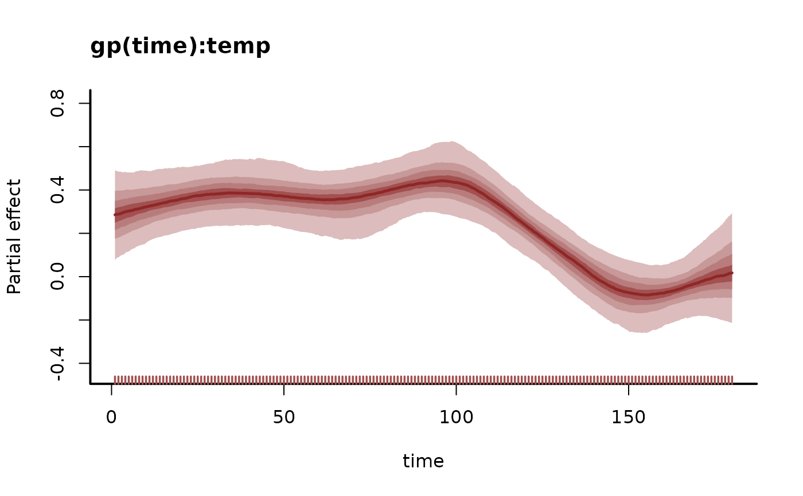
fc <- forecast(mod, newdata = data_test)
plot(fc)
#> Out of sample CRPS:
#> 6.48777085114583
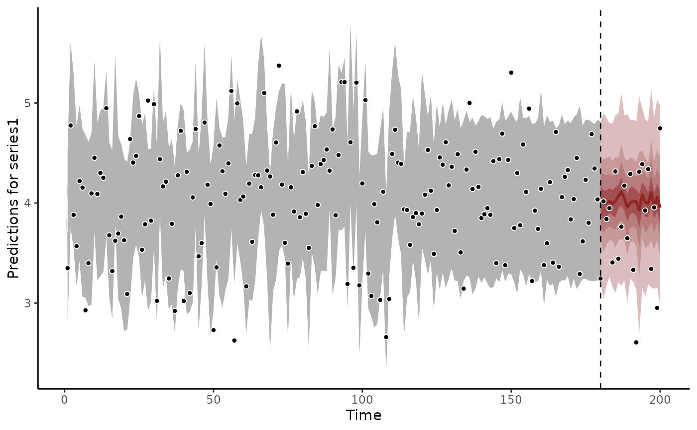
# Propagating the smooth term shows how the coefficient is expected to evolve
plot_mvgam_smooth(mod, smooth = 1, newdata = data)
abline(v = 180, lty = "dashed", lwd = 2)
points(beta_temp, pch = 16)
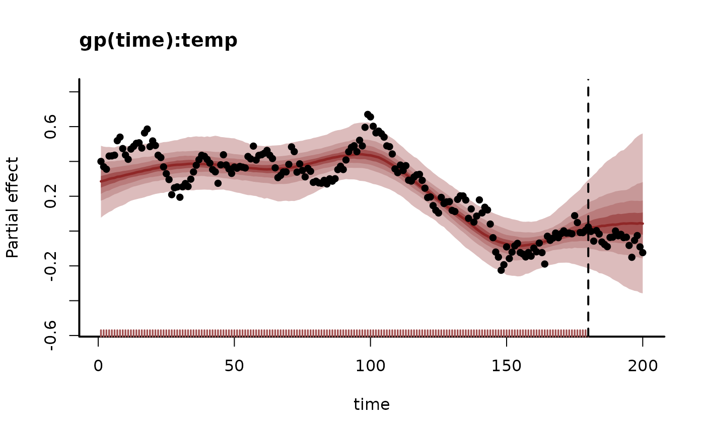
# Example showing how to incorporate an offset; simulate some count data
# with different means per series
set.seed(100)
dat <- sim_mvgam(
prop_trend = 0, mu = c(0, 2, 2),
seasonality = "hierarchical"
)
# Add offset terms to the training and testing data
dat$data_train$offset <- 0.5 * as.numeric(dat$data_train$series)
dat$data_test$offset <- 0.5 * as.numeric(dat$data_test$series)
# Fit a model that includes the offset in the linear predictor as well as
# hierarchical seasonal smooths
mod <- mvgam(
formula = y ~ offset(offset) +
s(series, bs = "re") +
s(season, bs = "cc") +
s(season, by = series, m = 1, k = 5),
data = dat$data_train,
chains = 2,
silent = 2
)
# Inspect the model file to see the modification to the linear predictor
# (eta)
stancode(mod)
#> // Stan model code generated by package mvgam
#> data {
#> int<lower=0> total_obs; // total number of observations
#> int<lower=0> n; // number of timepoints per series
#> int<lower=0> n_sp; // number of smoothing parameters
#> int<lower=0> n_series; // number of series
#> int<lower=0> num_basis; // total number of basis coefficients
#> vector[num_basis] zero; // prior locations for basis coefficients
#> vector[total_obs] off_set; // offset vector
#> matrix[total_obs, num_basis] X; // mgcv GAM design matrix
#> array[n, n_series] int<lower=0> ytimes; // time-ordered matrix (which col in X belongs to each [time, series] observation?)
#> matrix[8, 8] S1; // mgcv smooth penalty matrix S1
#> matrix[4, 4] S2; // mgcv smooth penalty matrix S2
#> matrix[4, 4] S3; // mgcv smooth penalty matrix S3
#> matrix[4, 4] S4; // mgcv smooth penalty matrix S4
#> int<lower=0> n_nonmissing; // number of nonmissing observations
#> array[n_nonmissing] int<lower=0> flat_ys; // flattened nonmissing observations
#> matrix[n_nonmissing, num_basis] flat_xs; // X values for nonmissing observations
#> array[n_nonmissing] int<lower=0> obs_ind; // indices of nonmissing observations
#> }
#> parameters {
#> // raw basis coefficients
#> vector[num_basis] b_raw;
#>
#> // random effect variances
#> vector<lower=0>[1] sigma_raw;
#>
#> // random effect means
#> vector[1] mu_raw;
#>
#> // smoothing parameters
#> vector<lower=0>[n_sp] lambda;
#> }
#> transformed parameters {
#> // basis coefficients
#> vector[num_basis] b;
#> b[1 : 21] = b_raw[1 : 21];
#> b[22 : 24] = mu_raw[1] + b_raw[22 : 24] * sigma_raw[1];
#> }
#> model {
#> // prior for random effect population variances
#> sigma_raw ~ inv_gamma(1.418, 0.452);
#>
#> // prior for random effect population means
#> mu_raw ~ std_normal();
#>
#> // prior for (Intercept)...
#> b_raw[1] ~ student_t(3, 1.6, 2.5);
#>
#> // prior for s(season)...
#> b_raw[2 : 9] ~ multi_normal_prec(zero[2 : 9], S1[1 : 8, 1 : 8] * lambda[1]);
#>
#> // prior for s(season):seriesseries_1...
#> b_raw[10 : 13] ~ multi_normal_prec(zero[10 : 13],
#> S2[1 : 4, 1 : 4] * lambda[2]);
#>
#> // prior for s(season):seriesseries_2...
#> b_raw[14 : 17] ~ multi_normal_prec(zero[14 : 17],
#> S3[1 : 4, 1 : 4] * lambda[3]);
#>
#> // prior for s(season):seriesseries_3...
#> b_raw[18 : 21] ~ multi_normal_prec(zero[18 : 21],
#> S4[1 : 4, 1 : 4] * lambda[4]);
#>
#> // prior (non-centred) for s(series)...
#> b_raw[22 : 24] ~ std_normal();
#>
#> // priors for smoothing parameters
#> lambda ~ normal(5, 30);
#> {
#> // likelihood functions
#> flat_ys ~ poisson_log_glm(flat_xs, off_set[obs_ind], b);
#> }
#> }
#> generated quantities {
#> vector[total_obs] eta;
#> matrix[n, n_series] mus;
#> vector[n_sp] rho;
#> array[n, n_series] int ypred;
#> rho = log(lambda);
#>
#> // posterior predictions
#> eta = X * b + off_set;
#> for (s in 1 : n_series) {
#> mus[1 : n, s] = eta[ytimes[1 : n, s]];
#> ypred[1 : n, s] = poisson_log_rng(mus[1 : n, s]);
#> }
#> }
#>
#>
# Forecasts for the first two series will differ in magnitude
fc <- forecast(mod, newdata = dat$data_test)
plot(fc, series = 1, ylim = c(0, 75))
#> Out of sample DRPS:
#> 26.650371
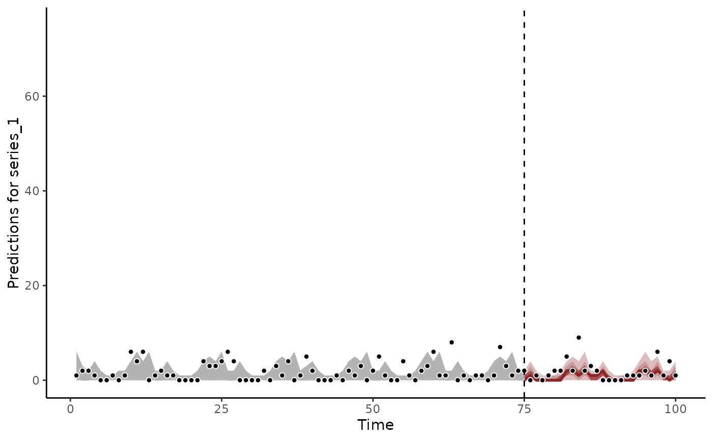
plot(fc, series = 2, ylim = c(0, 75))
#> Out of sample DRPS:
#> 101.645578
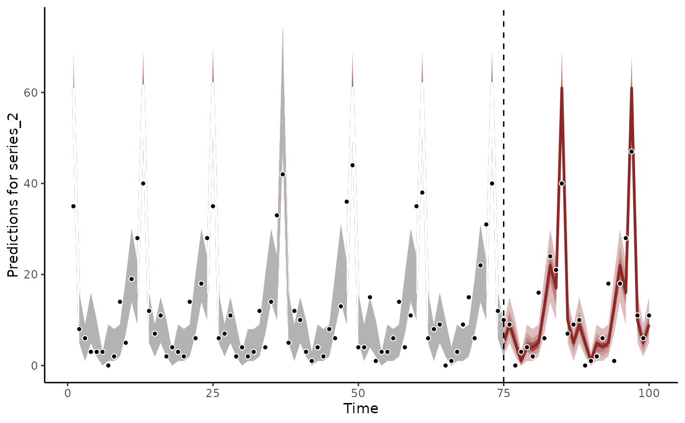
# Changing the offset for the testing data should lead to changes in
# the forecast
dat$data_test$offset <- dat$data_test$offset - 2
fc <- forecast(mod, newdata = dat$data_test)
plot(fc)
#> Out of sample DRPS:
#> 41.425863
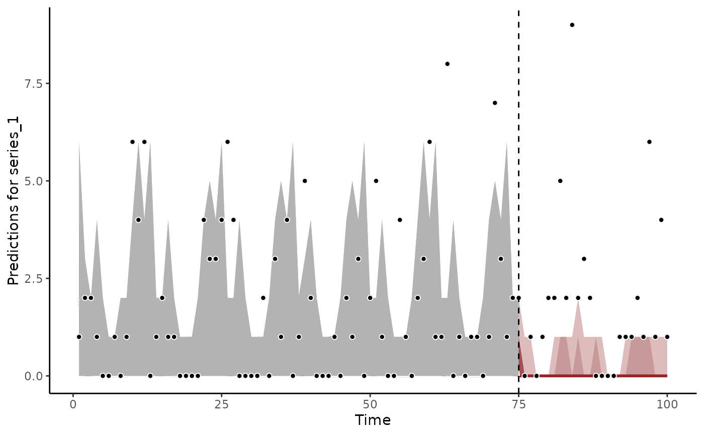
# Relative Risks can be computed by fixing the offset to the same value
# for each series
dat$data_test$offset <- rep(1, NROW(dat$data_test))
preds_rr <- predict(mod,
type = "link", newdata = dat$data_test,
summary = FALSE
)
series1_inds <- which(dat$data_test$series == "series_1")
series2_inds <- which(dat$data_test$series == "series_2")
# Relative Risks are now more comparable among series
layout(matrix(1:2, ncol = 2))
plot(preds_rr[1, series1_inds],
type = "l", col = "grey75",
ylim = range(preds_rr),
ylab = "Series1 Relative Risk", xlab = "Time"
)
for (i in 2:50) {
lines(preds_rr[i, series1_inds], col = "grey75")
}
plot(preds_rr[1, series2_inds],
type = "l", col = "darkred",
ylim = range(preds_rr),
ylab = "Series2 Relative Risk", xlab = "Time"
)
for (i in 2:50) {
lines(preds_rr[i, series2_inds], col = "darkred")
}
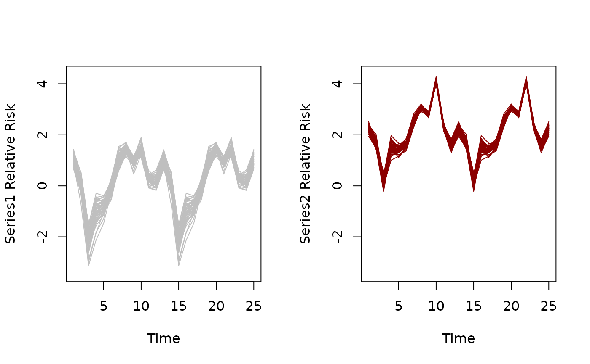
layout(1)
# Example showcasing how cbind() is needed for Binomial observations
# Simulate two time series of Binomial trials
trials <- sample(c(20:25), 50, replace = TRUE)
x <- rnorm(50)
detprob1 <- plogis(-0.5 + 0.9 * x)
detprob2 <- plogis(-0.1 - 0.7 * x)
dat <- rbind(
data.frame(
y = rbinom(n = 50, size = trials, prob = detprob1),
time = 1:50,
series = "series1",
x = x,
ntrials = trials
),
data.frame(
y = rbinom(n = 50, size = trials, prob = detprob2),
time = 1:50,
series = "series2",
x = x,
ntrials = trials
)
)
dat <- dplyr::mutate(dat, series = as.factor(series))
dat <- dplyr::arrange(dat, time, series)
plot_mvgam_series(data = dat, series = "all")
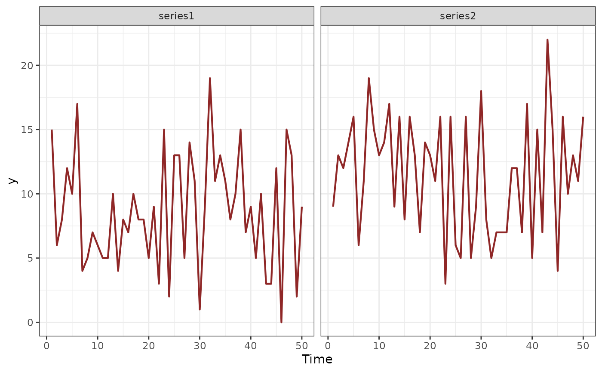
# Fit a model using the binomial() family; must specify observations
# and number of trials in the cbind() wrapper
mod <- mvgam(
formula =
cbind(y, ntrials) ~ series + s(x, by = series),
family = binomial(),
data = dat,
chains = 2,
silent = 2
)
#> Warning: Binomial and Beta-binomial families require cbind(n_successes, n_trials)
#> in the formula left-hand side. Do not use cbind(n_successes, n_failures)!
#> This warning is displayed once per session.
summary(mod)
#> GAM formula:
#> cbind(y, ntrials) ~ series + s(x, by = series)
#> <environment: 0x5630ee8c5dd8>
#>
#> Family:
#> binomial
#>
#> Link function:
#> logit
#>
#> Trend model:
#> None
#>
#> N series:
#> 2
#>
#> N timepoints:
#> 50
#>
#> Status:
#> Fitted using Stan
#> 2 chains, each with iter = 1000; warmup = 500; thin = 1
#> Total post-warmup draws = 1000
#>
#>
#> GAM coefficient (beta) estimates:
#> 2.5% 50% 97.5% Rhat n_eff
#> (Intercept) -0.710 -0.5800 -0.440 1.00 610
#> seriesseries2 0.430 0.6000 0.790 1.00 601
#> s(x):seriesseries1.1 -0.680 -0.0780 0.110 1.03 55
#> s(x):seriesseries1.2 -0.520 -0.0130 0.450 1.01 245
#> s(x):seriesseries1.3 -0.260 -0.0180 0.037 1.02 80
#> s(x):seriesseries1.4 -0.260 -0.0094 0.230 1.01 256
#> s(x):seriesseries1.5 -0.040 0.0067 0.120 1.01 134
#> s(x):seriesseries1.6 -0.290 -0.0160 0.180 1.01 158
#> s(x):seriesseries1.7 -0.160 -0.0085 0.099 1.01 219
#> s(x):seriesseries1.8 -0.770 0.0510 0.990 1.01 238
#> s(x):seriesseries1.9 -0.033 0.6700 0.940 1.03 52
#> s(x):seriesseries2.1 -0.100 0.0470 0.640 1.01 61
#> s(x):seriesseries2.2 -0.160 0.0460 1.300 1.02 54
#> s(x):seriesseries2.3 -0.042 0.0110 0.250 1.02 49
#> s(x):seriesseries2.4 -0.100 0.0230 0.520 1.02 74
#> s(x):seriesseries2.5 -0.180 -0.0076 0.030 1.02 64
#> s(x):seriesseries2.6 -0.089 0.0250 0.570 1.02 61
#> s(x):seriesseries2.7 -0.046 0.0150 0.310 1.02 61
#> s(x):seriesseries2.8 -2.200 -0.1000 0.320 1.02 61
#> s(x):seriesseries2.9 -0.920 -0.6900 -0.110 1.01 70
#>
#> Approximate significance of GAM smooths:
#> edf Ref.df Chi.sq p-value
#> s(x):seriesseries1 4.20 9 59.3 0.00038 ***
#> s(x):seriesseries2 2.62 9 27.4 < 2e-16 ***
#> ---
#> Signif. codes: 0 ‘***’ 0.001 ‘**’ 0.01 ‘*’ 0.05 ‘.’ 0.1 ‘ ’ 1
#>
#> Stan MCMC diagnostics:
#> ✔ No issues with effective samples per iteration
#> ✔ Rhat looks good for all parameters
#> ✔ No issues with divergences
#> ✔ No issues with maximum tree depth
#>
#> Samples were drawn using sampling(hmc). For each parameter, n_eff is a
#> crude measure of effective sample size, and Rhat is the potential scale
#> reduction factor on split MCMC chains (at convergence, Rhat = 1)
#>
#> Use how_to_cite() to get started describing this model
pp_check(mod,
type = "bars_grouped",
group = "series", ndraws = 50
)
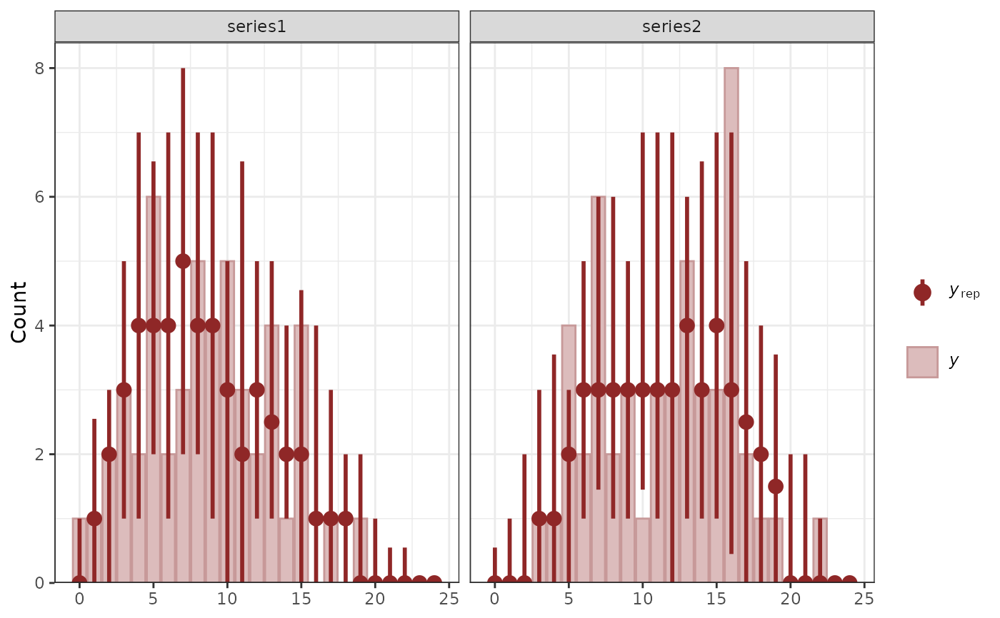
pp_check(mod,
type = "ecdf_overlay_grouped",
group = "series", ndraws = 50
)
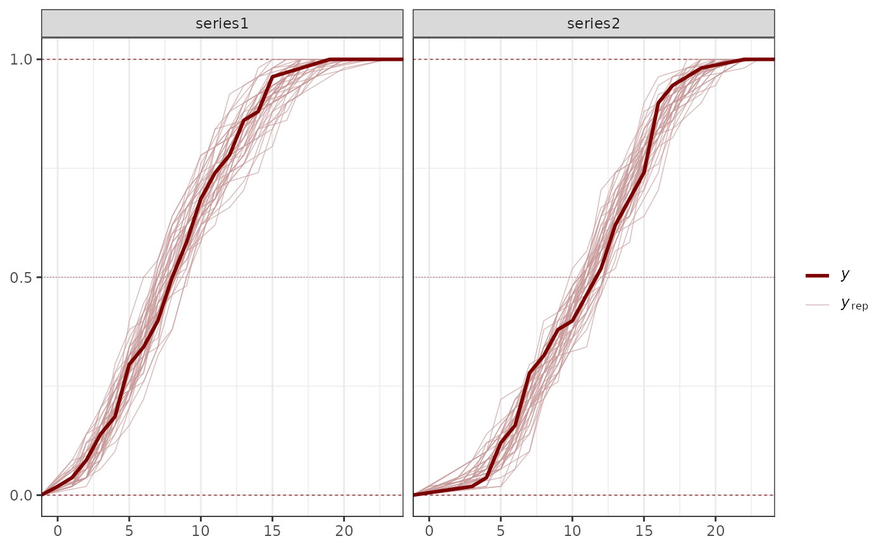
conditional_effects(mod, type = "link")
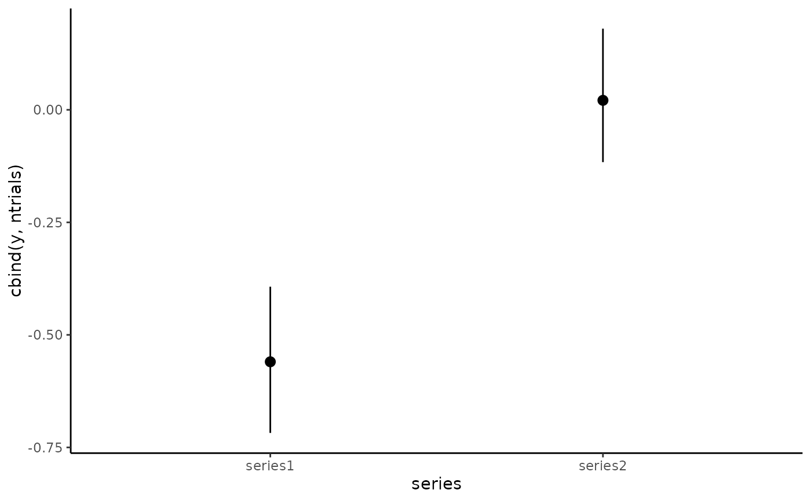
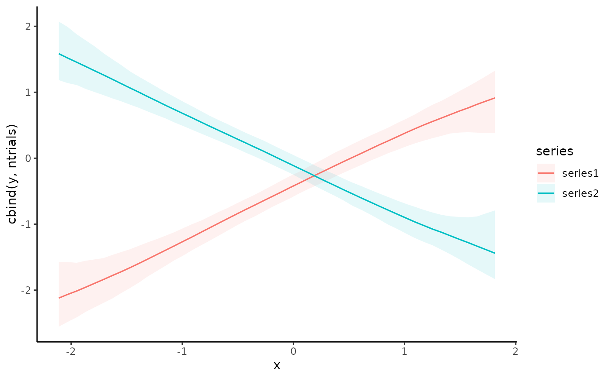
# To view predictions on the probability scale,
# use ntrials = 1 in datagrid()
plot_predictions(
mod,
by = c('x', 'series'),
newdata = datagrid(x = runif(100, -2, 2),
series = unique,
ntrials = 1),
type = 'expected'
)
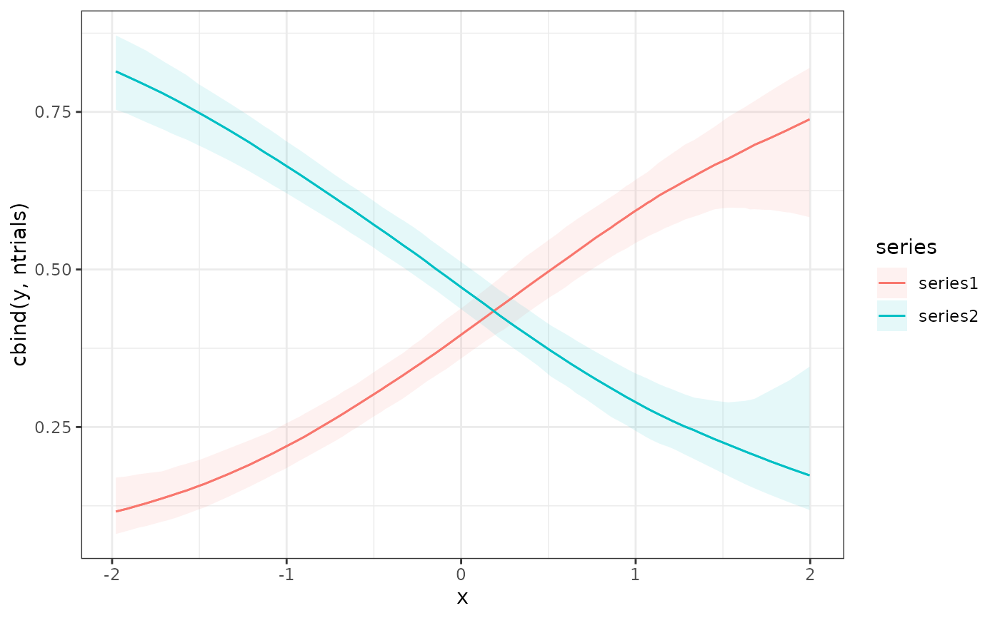
# \dontshow{
# For R CMD check: make sure any open connections are closed afterward
closeAllConnections()
# }
# }